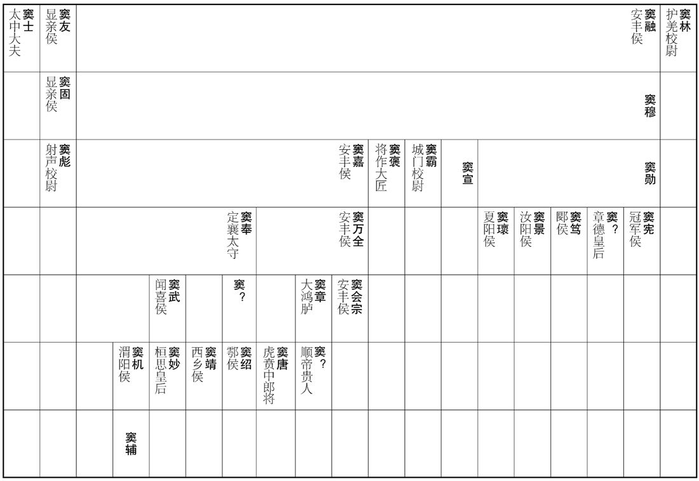
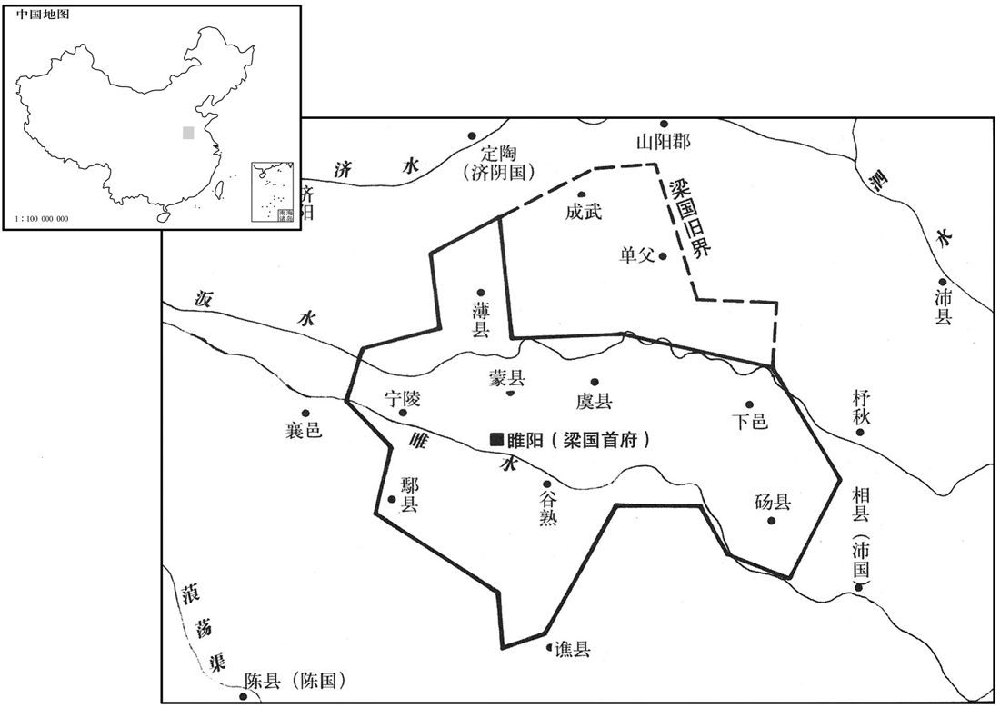
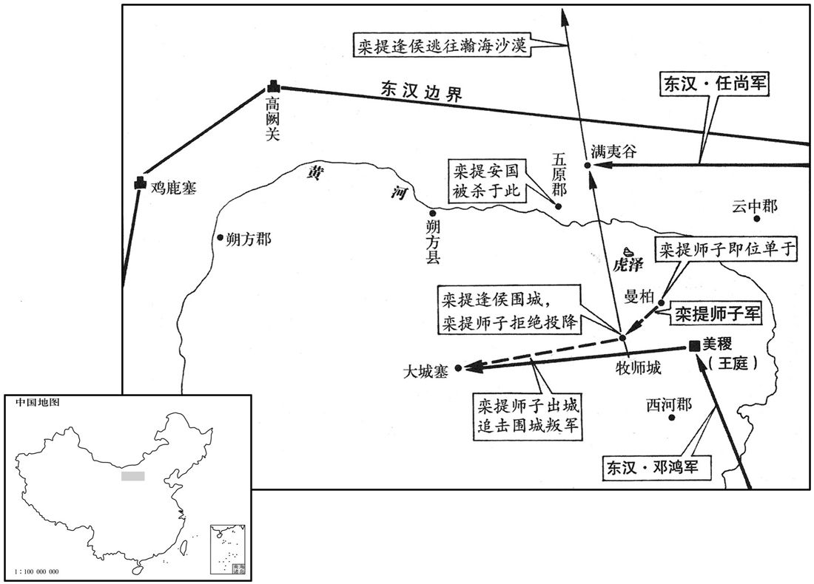
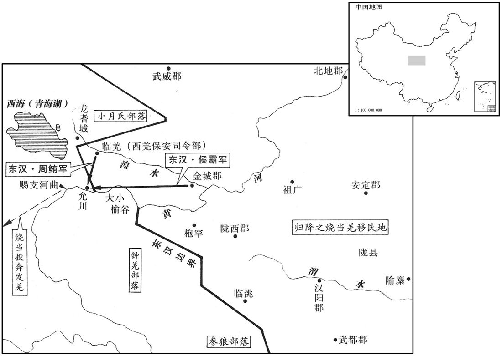

卷次与人物目录 / 卷48
资治通鉴 · 卷第四十八【汉纪四十】
公元92年至公元105年 · 原文、白话与胡三省注
本页按胡注本编排保存全卷内容。白话采用本站所据译本，未可靠对应的内容另列说明；事件标题用于定位，并非原书文字。
本卷共124段原文，123段有译文对应，1段缺译或待核对。
卷第四十八【汉纪四十】起玄黓执徐（壬辰），尽旃蒙大荒落（乙巳），凡十四年。
卷首原文与注释
孝和皇帝下
公元92年 · 汉孝和皇帝永元四年
永元四年〔（壬辰、九二）〕
本年事件索引（现代整理）
春，正月，遣大将军左校尉耿夔授于除鞬印绶，〔校，户教翻。鞬，九言翻。〕使中郎将任尚持节卫护屯伊吾，如南单于故事。〔任，音壬。〕
春季，正月，派遣大将军左校尉耿夔授予北匈奴于除印信绶带，命中郎将任尚持符节护卫，屯驻伊吾，一如南匈奴单于先例。

本年形势与背景参考图
初，庐江周荣辟袁安府，安举奏窦景〔事见上卷元年。〕及争立北单于事，〔见上卷上年。〕皆荣所具草，窦氏冬太尉掾徐齮深恶之，〔掾，俞绢翻。齮，鱼倚翻。恶，乌路翻。〕胁荣曰：「子为袁公腹心之谋，排奏窦氏，窦氏悍士、刺客满城中，谨备之矣！」〔悍，下罕翻，又侯旱翻。〕荣曰：「荣，江淮孤生，得备宰士，〔贤曰：荣辟司徒府，故称宰士。〕纵为窦氏所害，诚所甘心！」因敕妻子：〔敕，戒也。〕「若卒遇飞祸，〔卒，读曰猝。贤曰：飞祸，言仓卒而死也。余谓飞祸者，言刺客窃发，不可得而备，若鸟之飞集也。〕无得殡敛，〔敛，力赡翻。〕冀以区腐身觉悟朝廷。」
当初，庐江人周荣在司徒袁安府中供职。袁安弹劾窦景和反对封立北匈奴单于等事所上的奏章，都由周荣起草。窦家的门客、太尉掾徐深为痛恨，他威胁周荣说：“您做袁公的心腹谋士，排斥弹劾窦家，窦家的壮士、刺客遍布京城，请好生防备吧！”周荣说：“我周荣是长江、淮河地区的一介孤单书生，有幸能在司徒府中任职，纵然被窦家所害，也确实心甘情愿！”于是他告诫妻子：“如果我突然遭遇飞来横祸，不要收殓安葬，我希望借此区区遗躯使朝廷省悟。”
三月，癸丑，司徒袁安薨。
三月癸丑（十四日），司徒袁安去世。
闰月，丁丑，以太常丁鸿为司徒。
闰三月丁丑（初九），将太常丁鸿任命为司徒。
夏，四月，丙辰，窦宪还至京师。〔还，从宣翻，又如字。〕
夏季，四月丙辰（十八日），窦宪回到京城洛阳。
六月，戊戌朔，日有食之。丁鸿上疏曰：「昔诸吕擅权，统嗣几移；〔事见高后纪。几，居希翻。〕哀、平之末，庙不血食。〔事见王莽纪，鸿引此事以指言外戚之祸。〕故虽有周公之亲而无其德，不得行其势也。〔贤曰：言亲贤兼重，方可执政。〕今大将军虽欲敕身自约，不敢僭差；然而天下远近，皆惶怖承旨。〔怖，普布翻。〕刺史、二千石初除，谒辞、求通待报，〔初除而谒，之官则辞。求通者，求通名也；待报者，得谒与不得谒，得辞与不得辞，皆待报也。〕虽奉符玺，受台敕，〔符玺所以为信，初除者诣尚书台受敕。玺，斯氏翻。〕不敢便去，久者至数十日，背王室，〔背，蒲妹翻。〕向私门，此乃上威损，下权盛也。人道悖于下，效验见于天，虽有隐谋，神照其情，垂象见戒，以告人君。〔悖，蒲内翻。见，贤遍翻。〕禁微则易，〔易，以豉翻。〕救末则难；人莫不忽于微细以致其大，恩不忍诲，义不忍割，去事之后，未然之明镜也。〔言祸伏于隐微，人多忽之，及发见之后，昭昭而不可掩，是为未然之明镜。〕夫天不可以不刚，不刚则三光不明；王不可以不强，不强则宰牧从横。〔从，子用翻，又子容翻。横，户孟翻，子如字。〕宜因大变，改政匡失，以塞天意！」〔塞，悉则翻。〕
六月戊戌朔（初一），出现日食。丁鸿上书说：“当年吕氏家族专权，皇统几乎移位；哀帝、平帝末年，皇家宗庙祭祀中断。所以，即便是像周公那样的近亲，如果其人没有品德，也不能让他得势。如今大将军窦宪虽然希望自我约束，不敢有所僭越等级，但天下远近之人，全都对他诚惶诚恐地奉承听命。新任命的刺史、二千石官员，要到窦家拜谒辞行，求通姓名，听候答复。尽管已敬受皇上赐予的印信，接受过尚书台的训令，也不敢就此离去。等待召见的时间，久的要长达数十天。背对朝廷，趋向私门，这是君王威望受损、臣下权势过盛的表现。人间的伦常如果在下面被扰乱，天象就会出现相应的变化。尽管事有隐密，神灵也能洞察内情，用天象示警，以告诫人间的君王。在灾祸之初，可以轻易地加以禁绝，而到了灾祸之末，则难以挽救。人们无不是因疏忽了微小的祸端，以致酿成了大祸。出于恩情而不忍教诲，由于仁义而不忍割爱，而事过之后，再看灾祸发生前的迹象，便昭如明镜了。上天不可以不刚，不刚则日、月、星三光不亮；君王不可以不强，不强则大小官员横行无道。应当趁着天象示警，改正朝政的失误，以回报天意！”
丙辰，郡国十三地震。
丙辰（十九日），有十三个郡和封国发生地震。
旱，蝗。
发生旱灾和蝗灾。
窦氏父子兄弟并为卿、校〔卿，九卿；校，诸校尉。校，户教翻。〕充满朝廷，穰侯邓迭、迭弟步兵校尉磊及母元、宪女伲射声校尉郭举、举父长乐少府璜共相交结；〔贤曰：太后居长乐宫，故有少府，秩二千石。乐，音洛。〕元、举并出入禁中，举得幸太后，遂共图为杀害，〔谋弒逆也。〕帝阴知其谋。是时，宪兄弟专权，帝与内外臣僚莫由亲接，所与居者阉宦而已。〔阉宦，周礼谓之奄。郑玄注曰：奄，精气蔽藏者；今谓之宦人。阉，衣廉翻，又衣检翻。〕帝以朝臣上下莫不附宪，独中常侍钩盾令郑众，谨敏有心几，〔百官志：钩盾令，秩六百石，宦者为之，典诸近池苑囿游观之处，属少府。几，事也；心几，谓心事也，今人谓人胸中有城府者为有心事。朝，直遥翻。盾，食尹翻。几，居希翻。〕不事豪党，遂与众定议诛宪，以宪在外，〔谓出屯凉州时也。〕虑其为乱，忍而未发；会宪与邓迭皆还京师。〔还，从宜翻，又如字。〕时清河王庆，恩遇尤渥，〔渥，厚渍也。〕常入省宿止；〔省，禁中也。〕帝将发其谋，欲得外戚传，〔贤曰：前书外戚传。传，直恋翻。〕惧左右，不敢使，令庆私从千乘王求，〔千乘王伉，帝长兄也。乘，绳证翻。〕夜，独内之；又令庆传语郑众，求索故事。〔贤曰：谓文帝诛薄昭，武帝诛窦婴故事。索，山客翻。〕庚申，帝幸北宫，诏执金吾、五校尉勒兵屯卫南、北宫，〔执金吾掌宫外戒司非常，北军五校尉主五营士，故令勒兵屯卫。〕闭城门，收捕郭璜、郭举、邓迭、邓磊，皆下狱恐。〔下，遐稼翻。〕遣谒者仆射收宪大将军印绶，更封为冠军侯，〔宪先已封冠军侯，不受，今复封，以侯就国。更，居孟翻。〕与笃、景、緕皆就国。〔緕，古回翻。〕帝以太后故，不欲名诛宪〔言不欲正名诛之。〕为选严能相督察之。〔为，于伪翻。〕宪、笃、景到国，皆迫令自杀。
窦氏父子兄弟同为九卿、校尉，遍布朝廷。穰侯邓叠，他的弟弟、步兵校尉邓磊，母亲元，窦宪的女婿、射声校尉郭举，郭举的父亲、长乐少府郭璜等人，相互勾结在一起。其中元、郭举都出入宫廷，而郭举又得到窦太后的宠幸，他们便共同策划杀害和帝。和帝暗中了解到他们的阴谋。当时，窦宪兄弟掌握大权，和帝与内外臣僚无法亲身接近，一同相处的只有宦官而已。和帝认为朝中大小官员无不依附窦宪，唯独中常侍、钩盾令郑众谨慎机敏而有心计，不谄事窦氏集团，便同他密谋，决定杀掉窦宪。由于窦宪出征在外，怕他兴兵作乱，所以暂且忍耐而未敢发动。恰在此刻，窦宪和邓叠全都回到了京城。当时清河王刘庆特别受到和帝的恩遇，经常进入宫廷，留下住宿。和帝即将采取行动，想得《汉书·外戚传》一阅。但他惧怕左右随从之人，不敢让他们去找，便命刘庆私下向千乘王刘伉借阅。夜里，和帝将刘庆单独接入内室。又命刘庆向郑众传话，让他搜集皇帝诛杀舅父的先例。六月庚申（二十三日），和帝临幸北宫，下诏命令执金吾和北军五校尉领兵备战，驻守南宫和北宫；关闭城门，逮捕郭璜、郭举、邓叠、邓磊，将他们全部送往监狱处死。并派谒者仆射收回窦宪的大将军印信绶带，将他改封为冠军侯，同窦笃、窦景、窦一并前往各自的封国。和帝因窦太后的缘故，不愿正式处决窦宪，而为他选派严苛干练的封国宰相进行监督。窦宪、窦笃、窦景到达封国以后，全都强迫命令自杀。
初，河南尹张酺，数以正法绳治窦景，〔酺，薄乎翻。酺先为魏郡太守，郡人郑据奏窦景罪，景遣掾夏猛私究，正海罪，徙朔方。数，所角翻。治，直之翻。〕及窦氏败，酺上疏曰：「方宪等宠贵，群臣阿附唯恐不及，皆言宪受顾命之托，怀伊、吕之忠，至乃复比邓夫人于文母，〔贤曰：按邓夫人，即穰侯邓迭母元。张酺论宪兼及其党，称邓夫人，犹如前书霍光妻称霍显，祁大伯母号祁夫人之类。复，扶又翻。〕今严威既行，皆言当死，不〔【章：甲十六行本「不」下有「复」字；张校同。】〕顾其前后，考折厥衷。〔折，之舌翻。衷，竹仲翻。〕臣伏见夏阳侯緕每存忠善，前与臣言，常有尽节之心，检敕宾客，未尝犯法。臣闻王政骨肉之刑，有三宥之义，〔礼记：公族有罪，狱成，有司谳于公曰：「某之罪在大辟。」公曰：「宥之。」有司又曰：「在大辟。」公又曰：「宥之。」有司又曰：「在辟。」公又曰：「宥之。」及三宥不对，走出，致刑于甸人。公又使人追之曰：必宥之。」有司对曰：「无及之。」反命于公，公素服，如其伦之丧。〕过厚不过薄。今议者郄为緕选严能相，〔为，于伪翻。相，自亮翻，侯国相也。〕恐其迫切，必不完免，宜裁加贷宥，以崇厚德。」帝感其言，由是緕独得全。窦氏宗族宾客以宪为官者，皆免归故郡。
当初，河南尹张曾屡次依法制裁过窦景。及至窦氏家族败亡，张上书说：“当初窦宪等人受宠而身居显贵的时候，群臣阿谀附从他们唯恐不及，都说窦宪接受先帝临终顾命的嘱托，怀有辅佐商汤之伊尹、辅佐周武王之吕尚的忠诚，甚至还将邓叠的母亲元比作周武王的母亲文母。如今圣上的严厉诏命颁行以后，众人又都说窦宪等人该当处死，而不顾他们的前前后后，推究他们的真实思想。我看到夏阳侯窦一贯忠诚善良，他曾与我交谈，经常表露出为国尽节之心。他约束管教宾客，从未违犯法律。我听说圣明君王之政，对于亲属的刑罚，原则上能够赦免三次，可以过于宽厚，而不过于刻薄。如今有人建议为窦选派严厉干练的封国宰相，我担心这样会使窦遭到迫害，必不能保全性命而免去一死。应只对窦予以宽大，以增厚恩德。”和帝被他的言辞所感动，因此窦独得保全。窦氏家族及其宾客，凡因窦宪的关系而当官的，一律遭到罢免，被遣回原郡。
初，班固奴尝醉骂洛阳令秉兢，〔姓谱：秉本仲氏，避难改焉。〕兢因逮考窦氏宾客，收捕固，死狱中。固尝着汉书，尚未就，诏固女弟曹寿妻昭踵而成之。〔昭，即曹大家也。〕
当初，班固的奴仆曾因醉酒辱骂过洛阳令种兢。种兢便借着捉拿审讯窦家宾客的机会，逮捕了班固。班固死在狱中。班固曾编著《汉书》，当时尚未完稿。和帝下诏，命班固的妹妹、曹寿的妻子班昭继续撰写，完成此书。
华峤论曰：固之序事，不激诡，不抑抗，〔贤曰：激，扬也。诡，毁也。抑，退也。抗，进也。余谓激诡抑抗，皆指史家作意以为文之病。华，户化翻。〕赡而不秽，详而有体，使读之者亹亹而不厌，〔尔雅曰：亹亹，犹勉勉也；音无匪翻。〕信哉其能成名也！固讥司马迁是非颇谬于圣人，〔贤曰：言迁所是非与圣人乖谬，即崇黄、老而薄六经，轻仁义而贱守节是也。〕然其论议，常排死节，〔谓言龚胜竟夭天年之类。〕否正直，〔谓言王陵、汲黯之戆之类。〕而不叙杀身成仁之为美，〔谓不立忠义传。〕则轻仁义，贱守节甚矣！
华峤论曰：班固记述史事，不偏激，不诋毁，不贬抑，不抬举，丰富而不芜杂，周详而有系统，令人一读再读，不知厌倦。正是由于这个原因，他才得以成名。班固讥刺司马迁所是所非颇违背圣人之道，然而他自己的议论，却常常排斥死节，否定公正刚直，而且不记述杀身成仁者的美德。如此看来，班固本人则是太轻仁义、贱守节了！
初，窦宪纳妻，天下郡国皆有礼庆。汉中郡亦当遣吏，〔汉中郡，在洛阳西千九百九十里。〕户曹李合〔郡有户曹，主民户、祠祀、农桑。合，曷合翻。〕谏曰：「窦将军椒房之亲，不修德礼而专权骄恣，危亡之祸，可翘足而待；〔翘，举也。〕愿明府一心王室，勿与交通。」太守固遣之，合不能止，请求自行，许之。合遂所在迟留以观其变，行至扶风〔潘岳关中记曰：二辅旧治长安城中，长吏各居其县治民。东都之后，扶风出治槐里，冯翊出治高陵。〕而宪就国。凡交通者皆�之K官，汉中太守独不与焉。〔与，读曰预。〕
当初，窦宪娶妻的时候，天下各郡各封国都致送贺礼。汉中郡也要派官员前去送礼，户曹李劝谏太守说：“窦将军身为皇后的亲属，不修养德礼，却专权骄横，他的危险败亡之祸，马上就要来临。愿阁下一心效忠王室，不要与他来往。”但太守坚持要派人送礼，李不能阻止，就请求让自己前去。太守应允。李便随处拖延停留，以观察形势变化。当他走到扶风时，窦氏家族倾覆。窦宪被遣送封国。凡与窦宪交往的官员，全都因罪免官，而汉中郡太守独不在内。
帝赐清河王庆奴婢、舆马、钱帛、珍宝，充牣其第。庆或时不安，帝朝夕问讯，进膳药，所以垂意甚备。庆亦小心恭孝，自以废黜，尤长事慎法，故能保其宠禄焉。
和帝赏赐清河王刘庆奴婢、车马、钱帛、珍宝，装满他的府第。刘庆身体偶有不适，和帝就派人早晚探问，送去饮食和医药，垂顾关怀十分周到。而刘庆也小心谨慎而恭敬孝友，因自身曾遭废黜，他特别怕事，唯恐触犯法律，所以能够保住恩宠和厚禄。
帝除袁安子赏为郎，任隗子屯为步兵校尉，〔以安、隗守正不附窦氏也。任，音壬。隗，五罪翻。〕郑众迁大长秋。〔百官志：大长秋，秩二千石，承秦将行；景帝更为大长秋，或用士人，中兴常用宦者。职掌奉宣中宫命，凡给赐宗亲及宗亲当谒见者关通之，中宫出则从。张晏曰：皇后卿。师古曰：秋者，收成之时，长者，恒久之义，故以为皇后官名。〕帝策勋班赏，众每辞多受少，帝由是贤之，常与之议论政事，宦官用权自此始矣。
和帝将袁安的儿子袁赏任命为郎，将任隗的儿子任屯任命为步兵校尉，将郑众擢升为大长秋。和帝论功行赏，郑众总是谦让多而接受少。和帝因此认为郑众是位贤臣，常常同他一起讨论政事。宦官掌权，便从此开始了。
秋，七月，乙丑，太尉宋由以窦氏党策免，自杀。
秋季，七月己丑（二十三日），太尉宋由被指控为窦氏党羽，由和帝颁策罢免。宋由自杀。
癸丑，以大司农尹睦为太尉。太傅邓彪以老病上还枢机职，〔上，时掌翻。尚书，枢机之职。邓彪录尚书。〕诏许焉，以睦代彪录尚书事。
癸丑（十七日），将大司农尹睦任命为太尉。太傅邓彪因年老多病，请求辞去主管中枢机要的职务。和帝下诏应允，命令尹睦代替邓彪主管尚书事务。
冬，十月，〔【章：甲十六行本「月」下有「己亥」二字；乙十一行本同；孔本同；退斋校同。】〕以宗正刘方为司空。
冬季，十月，将宗正刘方任命为司空。
武陵、零陵、澧中蛮叛。
武陵、零陵、澧中蛮人反叛。
护羌校尉邓训卒，吏、民、羌、胡旦夕临者日数千人。〔临，力鸩翻，哭也。〕羌、胡或以刀自割，又刺杀其犬马牛羊，〔刺，七逆翻，又七四翻。〕曰：「邓使君已死，我曹亦俱死耳！」前乌桓吏士皆奔走道路，〔贤曰：训前任乌桓校尉时吏士也。〕至空城郭；吏执，不听，以状白校尉徐傿，〔傿，盖为乌桓校尉。傿，于建翻。〕傿叹息曰：「此为义也！」乃释之。遂家家为训立祠，〔为，于伪翻；下同。〕每有疾病，辄请祷求福。
护羌校尉邓训去世。宦吏、百姓、羌人和胡人从早到晚前往哀悼的，每日有数千人。有的羌人和胡人甚至用刀自刺，并杀死自己的狗马牛羊，说：“邓使君已死，我们也一起死吧！”邓训先前担任护乌桓校尉时的部下，全都上路奔丧，以至城郭为之一空。有关官员用逮捕奔丧者的手段进行阻拦，但人们并不理会。有关官员将情况报告了护乌桓校尉徐，徐叹道：“这是为了义呵！”便下令将被捕者释放。于是，当地家家户户为邓训立祠进行供奉，每当疾疫发生，人们就向邓训祭告祈福。
蜀郡太守聂尚代训为护羌校尉，欲以恩怀诸羌，乃遣译使招呼迷唐，使还居大、小榆谷。〔迷唐去大、小榆谷，事见上卷章和二年。邓训驱逐迷唐，而聂尚招呼之，欲以反邓训之政也。聂，缺「昵」辄翻。使，疏吏翻。〕迷唐既还，遣祖母卑缺诣尚，〔卑缺，盖迷吾之母。〕尚自送至塞下，为设祖道，令译田汜等五人护送至庐落。迷唐遂反，与诸种共生屠裂汜等，以血盟诅，〔种，章勇翻。汜，详里翻。诅，庄助翻。〕复寇金城塞。〔复，扶又翻。〕尚�之K。
蜀郡太守聂尚接替邓训担任护羌校尉。他打算对羌人各部落实行怀柔政策，便派翻译做使者招抚迷唐，让他返回大、小榆谷居住。迷唐回到大、小榆谷以后，派他的祖母卑缺来拜见聂尚。聂尚亲自将卑缺送到边塞之外，为她饯行，命翻译田汜等五人护送她回到羌人驻地。但迷唐又一次反叛，会同各部落一道生屠田汜等人，割裂他们的肢体，用鲜血盟誓，再度侵犯金城塞。聂尚因罪 而免官。
译本中未与胡注本可靠对应的内容
以下另列供核对版本差异，不并入胡注本正文。
译本所附古文
[12]八月，辛亥，司空任隗薨。
译本白话
八月辛亥（十五日），司空任隗去世。
公元93年 · 汉孝和皇帝永五年
五年〔（癸巳、九三）〕
本年事件索引（现代整理）
春，正月，乙亥，宗祀明堂，登灵台，赦天下。
春季，正月乙亥（十一日），和帝在明堂祭祀祖宗。登上灵台，观察天象。大赦天下。
戊子，千乘贞王伉薨。〔谥法：臣谥，直道不挠曰贞；事君无猜曰贞；清白守节曰贞；固节干事曰贞、伉，音抗。〕
戊子（二十四日），千乘贞王刘伉去世。
辛卯，封皇弟万岁广宗王。〔广宗县，属巨鹿郡。贤曰：今贝州宗城县。隋炀帝讳广，故改为宗城。〕
辛卯（二十七日），将皇弟刘万岁封为广宗王。
甲寅，太傅邓彪薨。
甲寅（疑误），太傅邓彪去世。
戊午，陇西地震。
戊午（疑误），陇西郡发生地震。
夏，四月，壬子，绝封阜陵殇王兄鲂为阜陵王。〔谥法：未家短折曰殇。阜陵殇王冲，质王延之子，元年嗣封，三年薨，无嗣，今以鲂绍封。鲂，符方翻。〕
夏季，四月壬子（二十日），将已故阜陵殇王刘冲的哥哥刘鲂封为阜陵王。
九月，辛酉，广宗殇王万岁薨，无子，国除。
九月辛酉（初一），广宗王刘万岁去世。因无子嗣，封国撤除。
初，窦宪既立于除鞬为北单于，郄辅归北庭，〔事见上卷三年。鞬，居言翻。〕会宪诛而止。于除鞬自畔还北，诏遣将兵长史王辅以千余骑与任尚共追讨，斩之，破灭其众。
当初，窦宪将於除立为北匈奴单于以后，曾计划护送他返回北匈奴王庭。遇到窦宪败亡，该计划作罢。於除自行叛离，返回北方。和帝下诏，派将兵长史王辅率领一千余骑兵，同中郎将任尚一同追击讨伐。汉军将於除斩杀，消灭了他的部众。
耿夔之破北匈奴也，〔事见上卷三年。〕鲜卑因此转徙据其地。〔拓拔氏自北荒南徙，盖此时也。〕匈奴余种留者尚有十余万落，〔种，章勇翻。〕皆自号鲜卑；鲜卑由此渐盛。
自从耿夔大败北匈奴，鲜卑人便乘此机会辗转迁徙，占据了北匈奴的故地。匈奴人残存的还有十余万户，全都自称为鲜卑人。鲜卑从此日益强盛。
冬，十月，辛未，太尉尹睦薨。
冬季，十月辛未（疑误），太尉尹睦去世。
十一月，乙丑，太仆张酺为太尉。酺与尚书张敏等奏「射声校尉曹褒，擅制汉礼，破乱圣术，宜加刑诛。」书凡五奏。帝知酺守学不通，〔言守其家学也。〕虽寝其奏，而汉礼遂不行。〔褒制礼事，见上卷章帝章和元年。〕
十一月乙丑（初六），将太仆张任命为太尉。张与尚书张敏等人上书指出：“射声校尉曹褒，擅自制定汉朝礼仪，破坏扰乱圣人之道，应当处以刑罚。”先后共上书五次。和帝知道张严守儒学正统，但僵固而不通达。他虽然不理会张的奏书，但从此便不再实行曹褒制定的汉礼。
是岁，武陵郡兵破叛蛮，降之。〔降，户江翻。〕
本年，武陵郡郡兵打败叛乱的蛮人，接受蛮人投降。
梁王畅与从官卞忌祠祭求福，〔姓谱：卞本自有周曹叔振铎之后，曹之支子封于卞，遂以建族。余按鲁有卞庄子，楚有卞和。〕忌等谄媚云：「神言王当为天子。」畅与相应答，为有司所奏，请征诣诏狱。帝不许，但削成武、单父二县。〔成武、单父二县，本属山阳，后属济阴，章帝以益梁国。贤曰：成武，今曹州县；单父，今宋州县。单，音善。〕畅凓惧，上疏深自刻责曰：「臣天性狂愚，不知防禁，自陷死罪，分伏显诛。〔分，扶问翻。〕陛下圣德，枉法曲平，〔贤曰：曲平，曲法申恩，平处其罪。〕横赦贷臣，为臣受污。〔横胡孟翻。污，恶也，天下以赦畅为纳污，是为畅受污。为，于伪翻。〕臣知大贷不可再得，自誓束身约妻子，不敢复出入失绳墨，不敢复有所棋费，〔横，户孟翻。复，扶又翻。〕租入有余，乞裁食睢阳、谷熟、虞、蒙、宁陵五县，还余所食四县。〔四县，下邑、尉氏、薄、郾也。睢，音虽。〕臣畅小妻三十七人，〔凡非正室者，皆小妻也。〕其无子者，愿还本家，自选择谨敕奴婢二百人，其余所受虎贲、官骑及诸工技、鼓吹、仓头、奴婢，兵弩、貛马，皆上还本署。〔虎贲士，属虎贲中郎将。官骑，驺骑也。汉官仪曰：驺骑，王家名官骑，与貛马皆属太仆。工技，属尚方。鼓吹，属黄门。仓头、奴婢，属永巷、御府、奚官等令。兵弩，属考工令。各有本署也。贲，音奔。技，渠绮翻。吹，昌瑞翻。上，时掌翻。〕臣畅以骨肉近亲，乱圣化，污清流，〔污，乌故翻。〕既得生活，诚无心面目以凶恶复居大宫，食大国，张官属，藏杂物，〔贤曰：古者师行，二五为什，食器之类必共之，故曰什物、餐具。今人通谓生生之具为什物。复，扶又翻。〕愿陛下加恩开许。」上优诏不听。
梁王刘畅与随从官卞忌一道祭祀祈福。卞忌等谄媚说：“神灵说大王应当做皇帝。”刘畅便同他对答谈论起来。有关官员对此提出弹劾，请求下令将刘畅征召进京，囚禁诏狱。和帝没有批准，只将刘畅的封土削去成武、单父两县。刘畅惭愧而又惶恐，上书痛切地自责道：“我生性狂妄愚昧，不知禁忌，自陷于死罪，按理该当诛杀示众。但陛下恩德深厚，违背法律和公平，而硬将我予以赦免，为我受到了玷污。我心知宽大的赦免不可再得，因此发誓约束自己和妻子儿女，不敢再有越轨的举动，也不敢再有浪费的行为。封国租税收入有余，我请求只享用睢阳、谷熟、虞、蒙、宁陵五县，将剩下的四县封土交还国家。我有妾三十七人，其中没有子女的，愿将她们送回娘家。我自己挑选谨慎规矩的奴婢二百人留下，除此之外，将赐给我的虎贲武士、骑兵仪仗，以及各种技艺的工匠、乐队、仆隶、奴婢、兵器、马匹，全部上缴原来所属官署。我身为圣上的骨肉近亲，竟扰乱圣明的教化，玷污纯洁的风气，如今既然已经保全性命，我实在无心无颜以罪恶之身再在巨大的宫室居住，拥有广袤的封国，设置官员僚属，收罗享用各种器具。愿陛下开恩准许我的请求。”和帝下诏表示宽大，温和地拒绝了他的请求。

护羌校尉贯友〔贯，姓也，汉初有赵相贯高。〕遣译使构离诸羌，诱以财货，由是解散。〔使，疏吏翻。诱，音酉。〕乃遣兵出塞，攻迷唐于大、小榆谷，获首虏八百余人，收麦数万斛，遂夹逢留大河筑城坞，〔此大河即黄河。河水至此有逢留之名，在二榆谷北。〕作大航，造河桥，欲度度击迷唐。〔郦道元水经注曰：于河狭作桥。航，户刚翻。〕迷唐率部落远徙，依赐支河曲。〔西羌传：赐支者，禹贡所谓析支者也。羌居河关之西南，演于赐支，至于河首，鼦地千里。司马彪曰：西羌自析支以西演河首，在右居也。河水屈而东北流，径于析支之地，是为河曲矣。应劭曰：禹贡析支属雍州，在河关之西，东去河关千余里，羌人所居，谓之河曲羌。〕
护羌校尉贯友派翻译官做使者，离间羌人诸部落，并用财物进行引诱，羌人诸部落联盟因此瓦解。于是贯友派兵出塞，在大、小榆谷对迷唐展开进攻，斩杀及俘虏八百余人，缴获小麦数万斛，然后又在逢留大河两岸修筑城堡，制造大船，兴建河桥，打算派兵渡河去追击迷唐。迷唐率领部落向远方迁徙，到达赐支河曲。
单于屯屠何死，单于宣弟安国立。安国初为左贤王，无称誉；及为单于，单于适之子右谷蠡王师子以次转为左贤王。〔谷，音鹿。蠡，卢奚翻。〕师子素勇黠多知，〔黠，下八翻。知，古智字通。〕前单于宣柔屯屠何皆爱其气决，数遣将兵出塞，〔数，所角翻；下同。〕掩击北庭，还，受赏赐，天子亦加殊异。由是国中尽敬子师而不附安国，安国欲杀之；诸新降胡，初在塞外数为师子所驱掠，〔在塞外，谓先属北部时。降，户刚翻。〕多怨之。安国〔【章：甲十六行本「国」下有「因是」二字；乙十一行本同；孔本同；张校同。】〕委计降者，与同谋议。师子觉其谋，乃别居五原界，每龙庭会议，〔匈奴龙庭，本在塞外，是时南单于居塞内，亦谓所居为龙庭。〕师子辄称病不往。度辽将军皇甫棱知之，亦拥护不遣，单于怀愤益甚。
匈奴单于屯屠何去世，前单于宣的弟弟安国继位。安国曾为左贤王，声誉不佳，及至他当了单于，前单于适的儿子右谷蠡王师子按照顺序转升为左贤王。师子一向勇猛狡黠而足智多谋，前单于宣和屯屠何二人都喜爱他的勇气和果敢，屡次派他领兵出塞，去袭击北匈奴。他回师后，受到赏赐，汉朝皇帝也对他特别看重。因此，匈奴国内都尊敬师子而不依附安国，安国想杀死师子。而那些新投降的北匈奴人，当初在塞外曾屡遭师子的袭击掳掠，多对他十分痛恨。安国便将自己的打算寄托在投降者身上，和他们一同策划。师子察觉了他们的阴谋，就分居五原郡界。每逢匈奴王庭集会，他总是称病而不肯前往。度辽将军皇甫棱知悉这一内情，也支持保护师子而不派他前往王庭。单于安国愈发怀恨。
公元94年 · 汉孝和皇帝永六年
六年〔（甲午、九四）〕
上传原文的注释括号有异常，字符原样保留；无法可靠划分的段落默认全文显示。
本年事件索引（现代整理）
春，正月，皇甫棱免，以执金吾朱徽行度辽将军。时单于与中郎将杜崇不相平，乃上书告崇；崇讽西河太守令断单于章，〔中郎将，使匈奴中郎将也。断，音短。单于居西河美稷，故讽令太守断其章，使不上闻。〕单于无由自闻。崇因与朱徽上言：「南单于安国，疏远故胡，亲近新降，〔远，于愿翻。近，其靳翻。降，户江翻。〕欲杀左贤王师子及左台且渠刘利等；又，右部降者，谋共迫胁安国起兵背畔，〔且，子余翻。背，蒲妹翻。〕请西河、上郡、安定为之儆备。」帝下公卿议，〔下，遐稼翻。〕皆以为：「蛮夷反复，虽难测知，然大兵聚会，必未敢动摇。今宜遣有方略使者之单于庭，〔之，往也。使，疏翻。与杜崇、朱徽及西河太守并力，观其动静。如无他变，可令崇等就安国会其左右大臣，责其部众横暴为边害者，共平罪诛。〔相与平处其罪，当诛者则诛之。横，户孟翻。〕若不从命，令为权时方略，事毕之后，裁行赏赐，〔贤曰：裁量赐物，不多与也。〕亦足以示百蛮。」〔【章：甲十六行本「蛮」下有「帝从之」二字；乙十一行本同；张校同。】〕于是徽、崇遂发兵造其庭。〔造，七到翻。〕安国夜闻汉军至，大惊，弃帐而去，〔帐，单于所居，即谓之穹庐，又谓之庐帐。〕因举兵欲诛师子。师子先知，乃悉将庐落入曼柏城；〔曼柏县，属五原郡。〕安国追到城下，门闭，不得入。朱徽遣吏譬〔【章：甲十六行本「譬」上有「晓」字；乙十一行本同；退斋校同。】〕和之，安国不听，城既不下，乃引兵屯五原。崇、徽因发诸郡骑追赴之急，众皆大恐，安国舅骨都侯喜为等卢并被诛，乃格杀安国，〔被，皮义翻。考异曰：帝纪在去年，误。今从南匈奴传。〕立师子为亭独尸逐侯鞮单于。〔鞮，丁奚翻。〕
两版字句有差异，建议核对原文。
春季，正月，将皇甫棱免官，命执金吾朱徽代理度辽将军职务。当时因匈奴单于与中郎将杜崇不和，单于便上书控告杜崇。杜崇暗示西河太守截留单于的奏章，使单于无法申诉自己的意见。杜崇自己却乘机与朱徽一同上书说：“南匈奴单于安国，疏远旧部，亲近新降之人，想要杀害左贤王师子和左台且渠刘利等。再者，匈奴右部的投降者正在策划共同胁迫安国起兵反叛。请西河、上郡、安定三郡为此警戒备战。”和帝将此事交付公卿进行讨论。众人都认为：“匈奴反复无常，尽管难以预料，但由于汉朝有重兵集结，它必定不敢有大的举动。如今应派遣有谋略的使者前往单于王庭，与杜崇、朱徽及西河太守合作，观察匈奴的动静。如果没有其它变化，可命令杜崇等人在安国那里召集他的左右大臣，责罚横行凶暴侵害边疆的部众，共同评议，论罪诛杀。倘若安国不听从命令，则授权使者随机应变，采取权宜之计，等事情结束之后，再酌情进行赏赐，也足以向所有蛮族显示汉朝的国威。”朱徽、杜崇便率军来到匈奴王庭。安国夜里听到汉军抵达的消息，大为震惊，丢弃庐帐而逃，随即调集军队，要诛杀师子。师子事先得到消息，便率领全体部众进入曼柏城。安国追到城下，城门关闭，不能进入。朱徽派官员进行调停，安国不肯接受。城既不能攻克，安国便率兵驻扎五原。于是杜崇、朱徽调发各郡骑兵急速追击，匈奴人全都大为恐慌。安国的舅父、骨都侯喜为等担心一并被诛，便将安国格杀，拥立师子为亭独尸逐侯单于。
已卯，司徒丁鸿薨。
两版字句有差异，建议核对原文。
正月己卯（二十一日），司徒丁鸿去世。
二月，丁未，以司空刘方为司徒，太常张奋为司空。
二月丁未（二十日），将司空刘方任命为司徒，将太常张奋任命为司空。
夏，五月，城阳怀一淑薨，无子，国除。
夏季，五月，城阳怀王刘淑去世。因无子嗣，封国撤除。
秋，七月，京师旱。
秋季，七月，京城发生旱灾。
西域都护班超发龟兹、鄯善等八国兵合七万余人〔龟兹，音丘慈。鄯，上扇翻。〕讨焉耆，到其城下，诱焉耆王广、尉犁王泛等于陈睦故城，斩之，傅首京师；〔诱，音酉。考异曰：袁纪「泛」作「沈」，今从超传。〕因纵兵钞掠，〔钞，楚交翻。〕斩首五千余级，获生口万五千人，更立焉耆左侯元孟为焉耆王。〔焉耆国有左右将、左右侯。更，工衡翻。〕超留焉耆半岁，慰抚之。于是西域五十余国悉纳质内属，至于海滨，〔西海之滨也，所谓条支、大秦、蒙奇、兜勒诸国也。质，音致。〕四万里外，皆重译贡献。〔重，直龙翻。班超所以成西域之功者，以匈奴衰困，力不能及西域也。〕
西域都护班超征发龟兹、鄯善等八国军队，共七万余人，讨伐焉耆。大军抵达焉耆城下，把焉耆王广、尉黎王等引诱到已故西域都护陈睦驻扎过的故城，然后斩杀，将人头送往京城洛阳。班超乘胜放纵士兵抄劫掳掠，斩杀五千余人，生擒一万五千人，改立焉耆左侯元孟为焉耆王。班超留驻焉耆半年，进行安抚。于是西域五十余国全都派送人质，归附汉朝。远至西海之滨，四万里外的国家，都经过几重翻译来汉朝进贡。
南单于师子立，降胡五六百人夜袭师子，〔降，户江翻。〕安集掾王恬将卫护士与战，破之。〔使匈奴中郎将置掾，随事为员，安集掾，以安集匈奴为称也。光武在河北，亦置安集掾，以天下未定，使之安集斯民也。建武二十六年，使匈奴中郎将置安集掾史，将弛刑五十人，持兵弩随单于所处，参辞讼，察动静。掾，俞绢翻。〕于是降胡遂相惊动，十五部二十余万人皆反，胁立前单于屯屠何子薁鞮日逐王逢侯为单于，〔「鞮」，当作「鞬」。贤曰：前「鞮」、「鞬」两字通，今不改亦可。薁，于六翻。鞬，九言翻。〕遂杀略吏民，燔烧邮亭、庐帐，将车重向朔方，欲度幕北。〔邮，音尤。重，直用翻。〕九月，癸丑，以光勋邓鸿车骑将军事，与越骑校尉冯柱、行度辽将军朱徽将左右羽林、北军五校士及郡国射、缘边兵，〔贤曰：汉有射士，言寻而射也。〕乌桓校尉任尚将乌桓、鲜卑合四人讨之。时南单一极中郎将杜崇屯牧师城，〔汉边郡有牧师菀以养马，此牧师菀城也，当在西河郡美稷县界。〕逢侯将万余骑攻围之。冬，十一月，与邓鸿等追击逢侯于大城塞，〔大城县故属西河郡，郡国志属朔方郡。〕斩首四千余级。任尚率鲜卑、乌桓要击逢侯于满夷谷，〔要，一遥翻。〕复大破之，〔复，扶又翻；下同。〕前后凡斩万七千余级。逢侯遂率众出塞，汉兵不能追而还。〔还，从宜翻，又如字。〕
南匈奴单于师子即位后，有五六百投降的北匈奴人乘夜袭击师子。安集掾王恬率领卫士迎战，将他们击败。于是投降的北匈奴人互相惊扰，十五个部落、二十余万人全部叛变。他们胁迫前单于屯屠何的儿子日逐王逢侯，将他立为单于。然后，屠杀抢劫官吏百姓，焚烧邮亭和庐帐，带着辎重前往朔方，打算穿越大漠北去。九月癸丑（疑误），和帝命光禄勋邓鸿代理车骑将军职务，同越骑校尉冯柱、代理度辽将军朱徽一道率领左右羽林军、北军五校士及各郡各封国的弓箭手、边郡士兵，另由乌桓校尉任尚率领乌桓、鲜卑部队，共计四万人，进行讨伐。当时，南匈奴单于和中郎将杜崇驻扎在牧师城，逢侯率领万余骑兵向他们发动围攻。冬季，十一月，邓鸿等到达美稷，逢侯这才解围离去，向满夷谷行进。南单于派他的儿子率领一万骑兵及杜崇部下四千骑兵，会同邓鸿的部队，在大城塞追击逢侯，斩杀四千余人。任尚则率领鲜卑、乌桓兵在满夷谷进行截击，再次大败叛军。先后共斩杀一万七千余人。于是逢侯率领部众逃出塞外，汉军因无法追击而返回。

以大司农陈宠为廷尉。宠性仁矜，数议疑狱，〔数，所角翻。〕每附经典，务从宽恕，刻敝之风，于此少衰。〔少，诗沼翻。〕
和帝将大司农陈宠任命为廷尉。陈宠生性仁厚端庄，曾多次审理疑难案件，总是引用儒家经典，力求遵循宽恕之道。苛刻的风气，从此稍有衰减。
帝以尚书令江夏黄香为东郡太守，香辞以：「典郡从政，才非所宜，乞留备赜官，〔赜，而陇翻，散也。〕赐以督责小职，任之宫台烦事。」〔宫，谓宫中；台，谓尚书台也。尚书出纳王命，故云宫台烦事。〕帝乃复留为尚书令，增秩二千石，〔按百官志：尚书令秩千石，今特增秩二千石，以香在尚书日久，又辞不拜郡，故复留为尚书令禄以郡守禄。〕甚见亲重。香亦祗勤物务，忧公如家。
和帝任命尚书令江夏人黄香为东郡太守。黄香推辞道：”主管郡的地方行政，我的能力并不适宜。请让我留下充当散官，赐予从事督察的微职，承担宫中尚书台的繁琐事务。”于是和帝便重新任命黄香为尚书令，而将官秩增加为二千石，对他很是亲近器重。黄香本人也谦恭勤奋，忠于职守，忧公事如忧家事。
公元95年 · 汉孝和皇帝永七年
七年〔（乙未、九五）〕
本年事件索引（现代整理）
春，正月，邓鸿等军还，冯柱将虎牙营留屯五原；鸿坐逗留失利，下狱死。后帝知朱徽、杜崇失胡和，又禁其上书，以致胡反，皆征，下狱死。〔下，遐稼翻。〕
春季，正月，邓鸿等率军班师，冯柱率虎牙营留驻五原。邓鸿被指控逗留不进、坐失军机，下狱处死。后来，和帝发现了朱徽、杜崇与匈奴不和，并使单于无法上书，致使匈奴反叛，于是将朱、杜二人征召进京，下狱处死。
夏，四月，辛亥朔，日之食之。
夏季，四月辛刻朔（初一），出现日食。
秋，七月，乙巳，易阳地裂。〔余按地理志及郡国志，易阳县属赵国。应劭曰：易水出涿郡故安；师古及贤皆曰县在易水之阳，此怕承应劭之误也。易也在燕南界，汉属河间郡界，此时赵国仅有唐邢、洺二州之地，安得有属县远在易水之阳邪！五代史志：洺州临洺县，旧曰易阳，后齐废，入襄国县；后周改为易阳县，别置襄国县；隋开皇六年，改易阳县为邯郸县，十年，改邯郸县为临洛而别置邯郸县。由是观之，汉易阳县当在邯郸、襄国二县之间。〕
秋季，七月乙巳（二十六日），易阳发生地裂。
九月，癸卯，京师地震。
九月癸卯（二十五日），京城洛阳发生地震。
乐成王党坐贼杀人，削东光、鄡二县。〔东光县，本属勃海郡；鄡县，本属巨鹿郡，章帝以益乐成国。鄡，音羌尧翻。旧禁宫人出嫁，不得适诸国。有故掖庭技人哀置嫁男子章初，党召入宫与通；初欲上书告之，党赂哀置姊昭杀初。〕
乐成王刘党被指控有杀人之罪，削去封国的东光、县二县。
公元96年 · 汉孝和皇帝永八年
八年〔（丙申、九六）〕
本年事件索引（现代整理）
春，二月，立贵人阴氏为皇后。后，识之曾孙也。
春季，二月，将贵人阴氏立为皇后，阴皇后是阴识的曾孙女。
夏，四月，〔【章：甲十六行本「月」下有「癸亥」二字；乙十一行本同；退斋校同。】〕乐成靖王党薨。子哀王崇立，寻死，无子，国除。
夏季，四月，乐成靖王刘党去世。他的儿子哀王刘崇继位为王，不久也去世了。因无子嗣，封国撤除。
五月，河内、陈留蝗。
五月，河内、陈留两郡发生蝗灾。
南匈奴右温禺犊王乌居战畔出塞。〔贤曰：温禺犊王名乌居战。〕秋，七月，度辽将军庞奋、越骑校尉冯柱追击破之，徙其余众及诸降胡二万余人于安定、北地。〔安定郡，在雒阳西千七百里。北地郡，在雒阳西千一百里。〕
南匈奴右温禺犊王乌居战反叛出塞。秋季，七月，度辽将军庞奋、越骑校尉冯柱出兵追击，打败乌居战，将他的残余部众及归降的匈奴部落二万余人迁徙到安定、北地二郡。
车师后部王涿鞮反，击前王尉毕大，获其妻子。〔「尉毕大」，西域传作「尉卑大」。时戊己校尉索頵欲废后部王涿鞮，涿鞮忿前王尉卑大卖己，因反，击尉卑大。鞮，丁奚翻。〕
车师后部王涿反叛，攻击车师前王尉毕大，俘虏了尉毕大的妻子儿女。
九月，京师蝗。
九月，京城洛阳发生蝗灾。
冬，十月，乙丑，北海王威以非敬王子，又侳诽谤，自杀。
冬季，十月乙丑（二十三日），北海王刘威由于不是前北海王刘睦的亲子，并被指控犯有诽谤之罪，因而自杀。
十二月，辛亥，陈敬王羡薨。
十二月辛亥（初十），陈敬王刘羡去世。
丁巳，南宫宣室殿火。
丁巳（十六日），南宫宣室殿失火。
护羌校尉贯友卒，以汉阳太守史充代之。充至，遂发湟中羌、胡出塞击迷唐。迷唐迎败充兵，〔败，补迈翻。〕杀数百人。充坐征，以代郡太守吴祉代之。
护羌校尉贯友去世。命汉阳太守史充接替贯友之职。史充到任后，便征发湟中的羌人、胡人出塞攻打迷唐。迷唐迎战，打败史充的部队，杀死数百人。史充因罪被召回京城，命代郡太守吴祉接替史充之职。
公元97年 · 汉孝和皇帝永九年
九年〔（丁酉、九七）〕
本年事件索引（现代整理）
春，三月，庚辰，陇西地震。
春季，三月庚辰（初十），陇西郡发生地震。
癸巳，济南安王康薨。〔谥法：好和不争曰安；宽裕和平曰安。济，子礼翻。〕
癸巳（二十三日），济南安王刘康去世。
西域长史王林击车师后王，斩之。〔后王涿鞮。〕
西域长史王林进攻车师后王，将他斩杀。
夏，四月，丁卯，封乐成王党子巡为乐成王。
夏季，四月丁卯（二十八日），将乐成王刘党的儿子刘巡封为乐成王。
五月，封皇后父屯骑校尉阴纲为吴房侯，〔郡国志：吴房县，属汝南郡，有棠溪亭。左传，房国，楚灵王所灭，又，楚昭王封吴王夫概于棠溪。地道记有吴城。吴房盖合吴城、房国以名县也。〕以特进就第。
五月，将皇后的父亲、屯骑校尉阴纲封为吴房侯，阴纲以特进身份离开官位，前往邸第。
六月，旱，蝗。
六月，发生旱灾和蝗灾。
秋，八月，鲜卑寇肥如，辽东太守祭参沮败，下狱死。〔贤曰：肥如县，属辽西郡。前书音义曰：肥子奔燕，封于此，今平州也。按祭肜传：参守辽东，鲜卑入郡界，参坐沮败，下狱死。盖寇辽西之肥如，遂入辽东郡界也。沮，在吕翻。〕
秋季，八月，鲜卑侵犯肥如。辽东太守祭参被指控怯懦无能、作战失利，下狱处死。
闰月，辛巳，皇太后窦氏崩。初，梁贵人既死，〔事见四十六卷章帝建初八年。〕宫省事秘，莫有知帝为梁氏出者。无阴公主子梁扈遣从兄襢奏记三府，〔扈，梁松子也。帝母梁贵人，少失母，为伯母舞阴公主所养。从，才用翻。贤曰：襢，古禅字。〕以为「汉家旧典，崇贵母氏，而梁贵人亲育圣躬，不蒙尊号，求得申议。」〔贤曰：求申理而议之也。〕太尉张酺言状，帝感恸良久，曰：〔毛晃曰：良，颇也；良久，颇久也。或曰：良久，少久也。一曰：良，略也，声轻，故转略为良。恸，徒弄翻，大哭也，哀过也。〕「于君意若何﹖」酺请追上尊号，存录诸舅。〔录，采也，收拾也。〕帝从之。会贵人姊南阳樊调妻嫕〔嫕，音于计翻。考异曰：袁纪「嫕」皆作「凭」，今从皇后纪、梁竦传。〕上书自讼曰：「妾父竦冤死牢狱，骸骨不掩；母氏年踰七十，及弟棠等远在绝域，不知死生。愿乞收竦朽骨，使母、弟得归本郡。」帝引见嫕，乃知贵人枉殁之状。三公上奏，「请依光武黜吕太后故事，〔事见四十五卷光武中元元年。按此事乃光武之失，而可引之为故典乎！〕贬窦太后尊号，不宜合葬先帝，§百官亦多上言者。帝手诏曰：「窦氏虽不遵法度，而太后常自灭损。朕奉事十年，〔自嗣位至是十年。〕深惟大义：〔惟，思也。〕礼，臣子无贬尊上之文，恩不忍离，义不忍亏。按前世，上官太后亦无降黜，〔谓上官桀公子诛，不累及上官后也。事见二十二卷昭帝元凤元年。〕其勿复议！」〔复，扶又翻。〕丙申，葬章德皇后。
闰八月辛巳（十四日），皇太后窦氏驾崩。当初，梁贵人死后，宫廷保守秘密，没有人知道和帝是梁贵人所生。至此，舞阴公主之子梁扈派堂兄梁向太尉、司徒、司空三府上书，提出：“汉朝旧制，一向尊崇皇帝生母。然而梁贵人亲自诞育皇上，却没有尊号，请求得到申理讨论。”太尉张向和帝报告了实情。和帝伤感哀痛良久，说道：“您认为应当怎样？”张建议为梁贵人追加尊号，并查找各位舅父，给予他们应有的名份。和帝听从了他的建议。适逢梁贵人的姐姐、南阳人樊调的妻子梁上书自诉道：“我的父亲梁竦屈死在牢狱之中，尸骨不得掩埋；母亲年过七十，同弟弟梁堂等在极远的边域，不知道是死是活。我请求准许安葬父亲的朽骨，让我的母亲和弟弟返回故郡。”和帝召见梁，这才知道生母梁贵人枉死的惨状。三公上书：“请依照光武帝罢黜吕太后的先例，贬去窦太后的尊号，不应让他与先帝合葬。”文武百官也纷纷上言。和帝亲手写诏作答：“窦氏家族虽不遵守法律制度，但窦太后却常常自我减损。朕将她当作母亲，侍奉了十年。深思母子大义：依据礼制，为臣、为子者没有贬斥尊长的道理。从亲情出发，不忍将太后之墓与先帝之墓分离；从仁义考虑，不忍作有损于窦太后的事情。考察前代，上官桀被诛杀，而上官太后也不曾遭到贬降罢黜。对此事不要再作议论！”丙申（二十九日），安葬窦太后。
烧唐〔【章：甲十六行本「唐」作「当」；乙十一行本同；熊校同。】〕羌迷唐率众八千人寇陇西，胁塞内诸种羌合步骑三万人击破陇西兵，杀大夏长。〔大夏县，属陇西郡。宋白曰：今大夏县属河州。夏，户雅翻。种，章勇翻。长，知两翻。〕诏遣行征西将军刘尚、越骑校尉赵世副之，〔以赵世副刘尚也。考异曰：西羌传作「赵代」，今从帝纪。余谓唐太宗讳世民，贤注范史，偶检点及此，遂改「世」为「代」耳。〕将汉兵、羌、胡共三万人讨之。尚屯狄道，世屯枹罕；〔狄道、枹罕二县，皆属陇西郡。宋白曰：狄道县，属兰州；枹罕县，河州治所。枹，音肤。〕尚遣司马寇盱监诸郡兵，四面并会。〔监，古衔翻。〕迷唐惧，弃老弱，奔入临洮南。〔奔入临洮南山也。〕尚等追至高山，大破之，斩虏千余人。迷唐引去，汉兵死伤亦多，不能复追，〔复，扶又翻。〕乃还。
烧当羌部落首领迷唐率领部众八千人侵犯陇西郡，并裹胁塞内各羌人部落，共计步兵、骑兵三万人，打败了陇西郡郡兵，杀死大夏县长。和帝下诏，派遣刘尚代理征西将军，以越骑校尉赵世为刘尚的副手，率领汉兵和羌、胡兵，共三万人，进行讨伐。刘尚驻扎在狄道，赵世驻扎在罕。刘尚派司马寇盱监督各郡郡兵，从四面一同会合。迷唐感到恐惧，抛弃了部落中的老弱成员，逃到临洮之南。刘尚等人追击到高山，大败迷唐军，斩杀、俘获一千余人。迷唐退走。汉军也有大量死伤，不能再继续追赶，于是回师。
九月，庚申，司徒刘方策免，自杀。
九月庚申（二十四日），和帝颁策将刘方免官。刘方自杀。
甲子，追尊梁贵人为皇太后，谥曰恭怀，追复丧制。冬，十月，乙酉，改葬梁太后及其姊大贵人于西陵。〔西陵，盖以其地在敬陵之西，故称西陵，犹薄太后陵在霸陵南，因谓之南陵也。贤曰：初，后葬有阙，故改葬。〕擢樊调为羽林左监。追封谥皇太后父竦为褒亲愍侯，〔谥法：在国逢难曰愍。〕遣使迎其丧，葬于恭怀皇后陵旁。征还竦妻子；封子棠为乐平侯，〔乐平，侯国，属东郡，故清县也，章帝更名。〕棠弟雍为乘氏侯，〔乘氏，侯国，属济阴郡，春秋之乘丘也。乘，绳证翻。〕雍弟翟为单父侯，〔单父，音善甫。〕位皆特进，赏赐以巨万计，宠遇光于当世，梁氏自此盛矣。
甲子（二十八日），和帝追尊梁贵人为皇太后，谥号“恭怀”，追补服丧。冬季，十月乙酉（十九日），将梁太后及她的姐姐梁大贵人之墓改葬到章帝陵墓之西。将樊调擢升为羽林左监。追封皇太后之父梁竦为褒亲侯，谥号为“愍”，派使者迎接他的灵柩，葬在梁太后墓旁。召回梁竦的妻子儿女，将梁竦的儿子梁棠封为乐平侯，将梁棠的弟弟梁雍封为乘氏侯，将梁雍的弟弟梁翟封为单父侯，全都位居特进。他们所得的赏赐极多，所蒙受的的恩宠和优待荣耀于当世。梁氏家族从此兴盛了。
清河王庆始取求上母宋贵人耱，〔宋贵人耱，在雒阳城北樊濯聚。上，时掌翻。〕帝许之，诏太官四时给祭具。庆垂涕曰：「生虽不获供养，〔供，俱用翻。养，羊尚翻。〕终得奉祭祀，私愿足矣！」欲求作祠堂，恐有自同恭怀梁后之嫌，遂不敢言，常泣向左右，以为没齿之恨。〔齿，年也。〕后上言：「外祖母王年老，乞诣雒阳疗疾，」于是诏宋氏悉归京师，〔宋氏归故郡，事见四十六卷章帝建初七年。〕除庆舅衍、俊、盖、暹等皆为郎。
清河王刘庆这才敢请求为母亲宋贵人祭扫坟墓。和帝应许，下诏命令太官春夏秋冬四季供应祭祀之物。刘庆流泪说道：“虽然不能在母亲生前供养，但最终能为她进行祭祀，我的心愿满足了！”他想请求为母亲建造祠堂，但又害怕有自比梁太后的嫌疑，于是不敢开口。他经常对左右随从哭泣，认为这是终身之憾。后来，他上书说：“我的外祖母王氏年事已高，请准许她到洛阳治病。”于是和帝下诏准许宋氏全家返回京城，并将刘庆的舅父宋衍、宋俊、宋盖、宋暹等全都任命为郎。
十一月，癸卯，以光禄勋河南吕盖为司徒。
十一月癸卯（初八），将光禄勋、河南人吕盖任命为司徒。
十二月，丙寅，司空张奋罢。壬申，以太仆韩棱为司空。
十二月丙寅（初一），将司空张奋免官。十二月壬申（初七），将太仆韩棱任命为司空。
西域都护定远侯班超遣掾甘英使大秦、条支，〔东观记曰：以汉中郡南郑县之西乡千户封超为定远侯。贤曰：定远故城，在今洋州西乡县南。西域传曰：自皮山西南经乌秅，涉悬度，历罽宾，六十余日，行至乌弋山离国，复西南，马行百余日，至条支。条支临西海，海水曲环其南及东北三面，路绝，唯西北隅通陆道。大秦国，西汉之犁轩也，在西海西，其人民长大平正，有类中国，故谓之大奏，今拂菻国是也。掾，俞绢翻。使，疏吏翻。〕穷西海，皆前世所不至，莫不备其风土，传其珍怪焉。及安息西界，〔自条支转北而东，马行六十余日，至安息。〕临大海，欲渡，船人谓英曰：「海水广大，往来者逢善风，〔善风，谓顺风也。〕三月乃得渡，若遇迟风，亦二岁者；故入海，人皆赍三岁粮，海中善使人思土恋慕，数有死亡者。」〔数，所角翻。〕英乃止。
西域都护、定远侯班超派遣属官甘英出使大秦帝国和条支王国。甘英走遍了西海一带，沿途所经，都是前代之人所未到过的地方，他在各处都全面了解风土人情，收集带走珍奇的物产。当他到达安息国西部边界的时候，遇到了大海。他打算渡过大海，船夫告诉他说：“海水广阔，航海者遇到顺风，要用三个月才能到达彼岸；如果遇到逆风，也有用两年的。所以，渡海的人都带上三年的口粮。海上容易使人怀恋乡土，经常有人死亡。”甘英这才作罢。
公元98年 · 汉孝和皇帝永十年
十年〔（戊戌、九八）〕
上传原文的注释括号有异常，字符原样保留；无法可靠划分的段落默认全文显示。
夏，五月，京师大水。
夏季，五月，京城洛阳发生水灾。
秋，七月，己巳，司空韩棱薨。八月，丙子，以太常太山巢堪为司空。
秋季，七月己巳（疑误），司空韩棱去世。八月丙子（十五日），将太常太山人巢堪任命为司空。
冬，十月，五州雨水。
冬季，十月，有五个州大雨成灾。
行征西将军刘尚、越骑校尉赵世坐畏懦征，下狱，免。谒者王信领尚营屯枹罕，谒者耿谭领世营屯白石。〔白石县，本属金城郡，时属陇西郡。水经注：白石川水南径白石城西注漓水，水又径白石县故城南。阚骃曰：白石县，在狄道县西北二百八十五里。贤曰：白石山在今兰州；或曰：河州凤林县，本汉白石县，张骏改为永固，唐为乌州，后废州置安昌县，后又更名凤林。杜佑曰：直道县有白石山。〕谭乃设购赏，诸种颇来内附。迷唐恐，乃请降；信、谭遂受降罢兵。十二月，迷唐等帅种人诣阙贡献。〔帅，读曰率。种，章勇翻。〕
代理征西将军刘尚、越骑校尉赵世被指控畏惧敌人、怯懦无能，被召回京城，下狱，免去官职。谒者王信率领刘尚的部队，驻扎在罕；谒者耿谭率领赵世的部队，驻扎在白石。耿谭便悬赏招降，有不少羌人部落前来依附。迷唐感到恐惧，就向汉军请降。于是王信、耿谭接受归降而罢兵。十二月，迷唐等率领本族人到京城朝见进贡。
戊寅，梁节王畅薨。
戊寅（十九日），梁节王刘畅去世。
初，居巢侯刘般薨，〔居巢县，属庐江郡。般，建初三年薨。〕子恺当嗣，称父遗意，让其弟宪，遁逃久之，有司奏绝恺国。肃宗美其义，特优假之，恺犹不出。积十余岁，有司复奏之，〔复，扶又翻。〕侍中贾逵上书曰：「孔子称『能以礼让为国乎何有』。〔见论语。有司不原乐善之心〔乐，音洛。〕而绳以循常之法，惧非长克让之风，成含弘之化也。」〔长，知两翻。〕帝纳之，下诏曰：「王法崇善，成人之美，其听宪嗣爵；遭事之宜，后不得以为比。」乃征恺，拜为郎。
起初，居巢侯刘般去世，他的儿子刘恺应当继位。但刘恺声称遵从父亲的遗愿，要将爵位让给弟弟刘宪，自己却逃走了。刘恺逃走后很久，有关部门上书请求撤除他的封国。章帝赞美刘恺的义行，特别优待宽容，可刘恺还是不肯露面。过了十余年，有关部门重申原来的请求。侍中贾逵上书说：“孔子说：‘能够以礼让治国吗？这有什么困难？’有关部门不推究刘恺乐于为善的本意，而依照平常的法则处理此事，这恐怕不能鼓励礼让的风气，也不能成全宽容仁厚的教化。”和帝采纳了他的意见，下诏说：“王法推崇善举，助人完成美事。现准许刘宪袭爵。这是对特殊情况的权宜处理，以后不得以此为例。”于是征召刘恺，将他任命为郎。
南单于师子死，单于长之子檀立，为万氏尸逐鞮单于。
南匈奴单于师子去世，前单于长的儿子檀继位，此即万氏尸逐单于。
公元99年 · 汉孝和皇帝永十一年
十一年〔（己亥、九九）〕
本年事件索引（现代整理）
夏，四月，丙寅，赦天下。
夏季，四月丙寅（初九），大赦天下。
帝因朝会，召见诸儒，〔朝，直遥翻。见，贤遍翻。〕使中大夫鲁丕与侍中贾逵、尚书令黄香等相难数会，〔难，乃旦翻。以经疑相难也；下同。〕帝善丕说，罢朝，特赐衣冠。丕因上疏曰：「臣闻说经者，传先师之言，非从己出，不得相让；相让则道不明，若规矩权衡之不可枉也。〔贤曰：规，圆也。矩，方也。权，秤锤。衡，秤衡也。〕难者必明其据，说者务立其义，〔汉儒专门名家，各守师说，故发难者必明其师之说以为据；答难者亦必务立大义以申其师之说。〕浮华无用之言，不陈于前，故精思不劳而道术愈章。〔章，明也。思，相吏翻。〕法异者各令自说师法，博观其义，无令刍荛以言得罪，〔自比于刍荛，谦也。荛，如招翻。〕幽远独有遗失也。」
和帝利用朝会之机召见儒生，让中大夫鲁丕和侍中贾逵、尚书令黄香等，就儒家经书中的难点互相质疑。和帝赞同鲁丕的观点，散朝后，特别赏赐他礼服冠帽。于是鲁丕上书说：“我听说，讨论经书，乃是传述先师的理论，并非发表个人见解，不能相互退让。如果相互退让，道理就难以明白，如同圆规、方矩、秤锤、尺寸的标准不可随意增减一样。质疑的一定要说清根据，解答的务必讲明观点。那些华而不实的言辞，不在人前铺陈办列，因此神思不劳苦而道理却愈发明白。当意见分歧时，让各自申说先师的理论，以便面了解经典的大义，不使儒生们因言辞不当而获罪，不可唯独让那些精微深刻的见解有所遗漏。”
公元100年 · 汉孝和皇帝永十二年
十二年〔（庚子、一○○）〕
本年事件索引（现代整理）
夏，四月，戊辰，秭归山崩。〔贤曰：秭归县，属南郡，古之夔国，今归州也。袁山松曰：屈原此县人，既被流放，忽然蹔归，其姊亦来，因名其地为秭归。秭，亦姊也，音蒋兕翻。〕
夏季，四月戊辰（十六日），秭归山发生山崩。
秋，七月，辛亥朔，日有食之。
秋季，七月辛亥朔（初一），出现日食。
九月，戊午，太尉张酺免。丙寅，以大司农张禹为太尉。
九月戊午（初九），将太尉张免职。丙寅（十七日），将大司农张禹任命为太尉。
烧当羌豪迷唐既入朝，其余种人不满二千，饥窘不立，〔不能自立也。种，章勇翻；下同。〕入居金城。帝令迷唐将其种人还大、小榆谷；迷唐以汉作河桥，〔即五年贯友所作之桥。〕兵来无常，故地不可复居，〔复，扶又翻；下同。〕辞以种人饥饿，不肯远出。护羌校尉吴祉等多赐迷唐金帛，令籴谷市畜，〔畜，许又翻。〕促使出塞，种人更怀猜惊。是岁，迷唐复叛，胁将湟中诸胡寇钞而去，〔钞，楚交翻。〕王信、耿谭、吴祉皆坐征。
烧当羌人部落首领迷唐到京城洛阳朝见以后，他的残余部众已不足两千人，饥饿穷困无法生存，全部迁入金城居住。和帝命令迷唐率领部众返回大、小榆谷。而迷唐认为，汉朝修筑了河桥，军队来往无常，而旧地已不能再去居住，于是推辞说部众饥饿，不肯远行。护羌校尉吴祉等赐给迷唐很多金帛，命他购买谷物牲畜，催促早日出塞。但羌人却更加猜疑和惊恐。本年，迷唐再度叛乱，裹胁湟中地区各胡人部落，攻杀抢掠而去。王信、耿谭、吴祉三人全都因罪被征召入京。
公元101年 · 汉孝和皇帝永十三年
十三年〔（辛丑、一○一）〕
秋，八月，己亥，北宫盛馔门阁火。〔盛馔门阁，御厨门阁也。晋书天文志曰：紫宫垣西南角外二星，内二星曰内厨，主六宫之内饮食，后妃、夫人与太子宴饮。东北维外六星，曰天厨，主盛馔。皇居则象于天极，故北宫有盛馔门阁。〕
秋季，八月己亥（二十五日），洛阳北宫盛馔门楼失火。
迷唐复还赐支河曲，将兵向塞。护羌校尉周鲔与金城太守侯霸〔金城郡在洛阳西二千八百里。鲔，于轨翻。〕及诸郡兵、属国羌、胡合三万人〔【章：甲十六行本「人」下有「出塞」二字；乙十一行本同；孔本同；张校同；退斋校同。】〕至允川。〔水经注曰：允川去赐支河曲数十里，在大、小榆谷之西。〕侯霸击破迷唐，种人瓦解，降丈六千余口，〔种，章勇翻。降，户江翻。〕分徙汉阳、安定、陇西。迷唐遂弱，远踰赐支河首，依发羌居。〔发羌，羌之别种，或曰：唐之吐蕃即其后也。〕久也，病死，其子来降，户不满数十。
迷唐又回到赐支河曲，率兵接近汉朝边塞。护羌校尉周鲔和金城太守侯霸，率领各郡郡兵、附属国的羌兵、胡兵，共三万人，到达允川。侯霸打败迷唐，烧当部落瓦解，六千余人投降，将他们分别迁徙到汉阳、安定和陇西。迷唐从此势力衰弱，他越过赐支河源头远逃，投靠到发羌部落定居。多年以后，迷唐病死，他的儿子前来归降，部众已不足数十户。

荆州雨水。
荆州大雨成灾。
冬，十一月，丙辰，诏曰：「幽、并、凉州户口率少，〔幽州部涿郡、广阳、代郡、上谷、渔阳、右北平、辽西、辽东、玄菟、乐浪等郡。并州部上党、太原、上郡、西河、五原、云中、定襄、鴈门、朔方等郡。幽州大郡，户犹十万余，唯玄菟户一千五百二十四。并州大郡三万余，小郡不满二千。凉州大郡不满三万，敦煌七百四十八而已。少，诗沼翻。〕边役众剧，束修良吏进仕路狭。〔束修，谓束发自修者也。〕抚接夷狄，以人为本，其令缘边郡口十万以上，岁举孝廉一人，不满十万，二岁举一人，五万以下，三岁举一人。」
冬季，十一月丙辰（十四日），和帝下诏说：“幽州、并州、凉州地区户口大多稀少，而边境差役繁重，奉公守法的优秀官吏升迁困难。安抚外族和与异国交往，人才最为重要。现规定：边疆人口十万以上的郡，每年推举孝廉一人；人口不足十万的郡，每两年推举孝廉一人；人口五万以下的郡，每三年推举孝廉一人。”
鲜卑寇右北平，〔右北平郡，在雒阳北二千三百里。〕遂人渔阳，渔阳太守击破之。
鲜卑进攻右北平，继而侵入渔阳。渔阳太守迎战，打败鲜卑军。
戊辰，司徒吕盖以老病致仕。
戊辰（二十六日），司徒吕盖因年老患病退休。
巫蛮许圣以郡收税不均，怨恨，遂反；〔贤曰：巫县，属南郡，故城在今夔州巫山县。〕辛卯，寇南郡。
巫山蛮人许圣因本郡官府征收赋税不均，心怀怨恨，于是起兵造反。辛卯（疑误），攻打南郡。
公元102年 · 汉孝和皇帝永十四年
十四年〔（壬寅、一○二）〕
上传原文的注释括号有异常，字符原样保留；无法可靠划分的段落默认全文显示。
本年事件索引（现代整理）
春，安定降羌烧何种反，〔烧当与烧何各是一种。种，章勇翻；下同。〕郡兵击灭之。时西海及大、小榆谷左右无复羌寇，〔水经：河水自东河曲径西海郡南，又东径允川而历大、小榆谷北。复，扶又翻。〕隃麋相曹凤上言：〔隃麋，侯国，属右扶风。隃，言踰。麋，音眉。贤曰：隃麋故城，在今陇州洴阳县东南。〕「自建武以来，西羌犯法者，常从烧当种起，所以然者，以其居大、小榆谷，土地肥美，有西海鱼盐之利，〔西海有允谷盐池。〕阻大河以为固。又，近塞诸种，易以为非，〔易，以豉翻。〕难以攻伐，故能强大，常雄诸种，恃其拳勇，〔诗云：无拳无勇。毛苌注云：拳，力也。〕招诱羌、胡。今者衰困，党援坏沮，〔诱，音酉。沮，在吕翻。〕亡逃栖窜，远依发羌。臣愚以为宜及此时建复西海郡县，〔建，立也。立策复置郡县也。置西海郡见三十六卷平帝元始四年。〕规固二榆，〔规，图也，谋也。〕广设屯田，隔塞羌、胡交关之路，〔塞，悉则翻。〕遏绝狂狡窥欲之源。又殖谷富边，省委输之役，〔委，于伪翻。输，舂遇翻。〕国家可以无西方之忧。」上从之，缮修故西海郡，徙金城西部都尉以戌之，〔孟康曰：金城西部都尉府在金城县。〕拜凤为金城西部都尉，屯龙耆。〔贤曰：龙耆，即龙支也，今鄯州县。宋白曰：鄯州龙支县，本汉允吾县地，敢县西龙支堆为名。〕后增广屯田，列屯夹河，合三十四部。其功垂立，会永初中，诸羌叛，乃罢。
春季，安定郡原已归降的羌人烧何部落造反，被郡兵剿平。至此，西海及大、小榆谷一带，不再有羌人叛乱。麋国相曹凤上书说：“自从光武帝建武年代以来，西羌人犯法作乱，常由烧当部落发起。所以如此的原因，是由于烧当部落所居住的大、小榆谷，土地肥沃，享有西海的渔业、盐业收益，以大河作为固守的屏障。再者，靠近边塞的各部落，易于作乱，而汉朝又难以进行讨伐，所以他们能够强大起来，经常称雄于其他部落，并倚仗自己的实力和骁勇，招揽引诱羌人、胡人。如今烧当部落衰落困窘，孤立无援，仓惶逃亡，到远方投靠发羌部落。我认为应当乘这个时机重建恢复西海郡县，规划、控制大、小榆谷，广设屯田，切断边塞内外羌人、胡人的交往通道，遏止切断狂妄狡猾者觊觎的源泉。同时广种粮食，使边疆富庶，减少由内地向边塞运输粮秣的差役。这样，国家便可以没有西方的忧虑。”和帝听从了他的建议，下令对原西海郡进行修缮整治，命金城西部都尉府迁往该地戍守。又将曹凤任命为金城西部都尉驻扎龙耆。随后扩大垦田面积，在黄河西岸屯兵，共计有三十四部。这一事业即将告成时，恰逢安帝永初年间羌人各部落叛乱，于是废止。
三月，戊辰，临辟雍飨射，赦天下。
三月戊辰（二十七日），和帝临幸太学，饮宴射箭，举行飨射之礼。大赦天下。
夏，四月，遣使者督荆州兵万余人，分逆讨巫蛮许圣等，大破之。圣等乞降，悉徙置江夏。〔晋、宋之荆州蛮，分居沔中西阳者，即巫蛮之余种也。降，户江翻。〕
夏季，四月，派使者督领荆州兵一万余人，分路讨伐巫山蛮人许圣等，大败叛军。许圣等乞求投降。东汉朝廷将巫山蛮人全部迁徙安置到江夏。
阴皇后多勡忌，宠遇浸衰，数怀恚恨。〔数，所角翻。恚，衣避翻。〕后外祖母邓朱，出入宫掖，有言后与朱共挟巫蛊道者；〔贤曰：巫师为蛊，故曰巫蛊。左传注曰：蛊，惑也。〕帝使中常侍张慎与尚书陈褒案之，劾以大逆无道，〔劾，户概翻，又户得翻。〕朱二子奉、毅，后弟辅皆考死狱中。六月，辛卯，后坐废，于迁桐宫，以忧死。父特进纲自杀，后弟轶、敞及朱家属徙日南北景。〔日南郡，秦象郡也，武帝更名，在雒阳南喁三千四百里；比景县属焉。如淳曰：日中于头上，景在己下，故名之。师古曰：日南，言其在日之南，所谓「开北户以向日」者。轶，音逸。〕
阴皇后忌妒心十分强烈，因和帝对她的宠幸逐渐减退，心中常怀怨恨。她的外祖母邓朱，出入往来于内宫，有人指控阴皇后和她一同施用巫蛊。和帝让中常侍张慎与尚书陈褒审讯核实，张、陈二人以“大逆无道”的罪名进行弹劾。邓朱的两个儿子邓奉、邓毅，以及阴皇后的弟弟阴辅都在狱中被拷打而死。六月辛卯（二十二日），阴皇后因罪罢黜，被迁到桐宫，忧愁而死。她的父亲特进阴纲自杀，弟弟阴轶、阴敞及邓朱的家属被流放到日南郡比景县。
秋，七月，壬子，常山殇王侧薨，无子，立其兄防子侯章为常山王。〔房子县属常山国。〕
秋季，七月壬子（十三日），常山殇王刘侧去世。因无子嗣，将他的哥哥防子侯刘章立为常山王。
戊辰，司徒吕盖以老病致仕。
本段缺少可靠对应白话，原文完整保留；未使用生成译文。
班超久在绝域，〔超始出西域，见四十五卷明帝永平十六年。〕年老思土，上书乞归曰：「臣不敢望到酒泉郡，但愿生入玉门关。〔酒泉郡，在雒阳西四千七百里。贤曰：玉门关，属敦煌郡，今沙州也，去长安三千六百里，关在敦煌县西北。酒泉郡，今肃州也，去长安二千八百五十里。〕谨遣子勇随安息献物入塞，及臣生在，令勇目见中土。」朝廷久之未报，超妹曹大家〔超妹昭，嫁扶风曹寿，博学高才，有节行法度。帝数召入宫，令皇后诸贵人师事焉，号曰大家。家，今人相传读曰姑。又据皇后纪，冲帝母虞贵人，梁冀秉政，抑而不加爵号，但称大家而已。则大家者，宫中相尊之称也。〔上书曰：「蛮夷之性，悖逆侮老；〔悖，蒲内翻，又蒲没翻。〕而超旦暮入地，久不见代，恐开奸宄之原，生逆乱之心。而卿大夫咸怀一切，莫肯远虑，如有卒暴，〔卒，读曰猝；下同。〕超之气力不能从心，便为上损国家累世之功，下弃忠臣竭力之用，诚可痛也！故超万里归诚，自陈苦急，延颈踰望，〔贤曰：踰，遥也，高祖踰谓黥布曰：何苦而反﹖余按前书，当作「隃」，读曰遥，传写误作「踰」。〕三年于今，未蒙省录。〔省，悉景翻。〕妾窃闻古者十五受兵，六十还之，〔贤曰：周礼乡大夫职曰：国中七尺以及六六十有五，皆征之。征，谓赋税从征役也。韩诗外传曰：二十行役，六十免役；与周礼国中同，即知一与周礼七尺同。礼，国中六十免役，野即六十有五，晚于国中五年。国中七尺从役，野六尺，即是野又早于国中五年。七尺，谓二千；六尺，即十五也。上言十五受兵，据野外为言；六十还之，据国中为说也。〕亦有休息，不任职也。〔任，音壬。〕故妾敢触死为超求哀，伹超余年，〔为，于伪翻。贤曰：伹，乞也。〕一得生还，复见阙庭，使国家劳远之虑，西域无仓卒之忧，超得长蒙文王葬骨之恩，〔新序曰：周文王作灵台，掘地得死人之骨，王曰：「更葬之！」吏曰：「此无主矣。」文王曰：「有天下者，天下之主也，有一国者，一国之主也；寡人固其主，及安求之主！」遂更葬之。天下皆曰：「文王贤矣，泽及朽骨，而况于人乎！」〕子方哀老之惠。」〔贤曰：田子方，魏文侯之师也，见君之老马弃之，曰：「少尽其力，老而弃之，非仁也。」于是收而养之。〕帝感其言，乃征超还。八月，超至雒阳，拜为射声校尉；九月，卒。〔考异曰：本传称超十二年上疏，十四年至雒阳。而妹昭上书曰：「延颈踰望，三年于今。」注引东观记曰：「安息遣使献大雀、师子，超遣子勇随入塞。」按帝纪：「十三年，安息国入贡」，袁纪载超书亦在十三年。今并置其书于此。袁绝又云「超到数月薨」，今从本传。〕
班超久在遥远的边域，因年老而思念故乡，上书请求回国。奏书说：“我不敢企望能到酒泉郡，但愿能活着进入玉门关。现在派遣我的儿子班勇随同安息国的进贡使者入塞，趁我尚在人世，让班勇亲眼看到中原的风土。”奏书呈上，朝廷久不答复。班超的妹妹曹大家上书说：“蛮夷生性欺老，而班超已经年迈，随时可能故世，却久不被人替代。我担心这将打开奸恶的源泉，使蛮夷萌生叛逆之心。但大臣们都只顾眼前，不肯作长远考虑。如果猝然有变，班超力不从心，将对上损害国家累世建立的功业，对下毁弃忠臣竭力经营的成果，实在是令人痛惜！因此，班超万里之外表示忠诚，陈述困苦急迫之情，伸长脖颈遥望，至今已经三年，但朝廷却没有考虑批准他的请求。我曾听说，在古代，十五岁当兵，六十岁复员，也有休息之日，年老便不再任职。因此我胆敢冒死代班超哀求，请在班超的余年，让他能够活着回来，再次看到京都城阙和皇家宫庭，使国家没有远方的忧虑，西域没有猝然的变故，而班超也能蒙受周文王埋葬骸骨的厚恩和田子方哀怜老马的仁慈。”和帝被班超的奏书所感动，于是召班超回国。本年八月，班超抵达洛阳，被任命为射声校尉。九月，班超去世。
超之被征，〔被，皮义翻。〕以戊己校尉任尚代为都护。尚谓超曰：「君侯在外国三十余年，而小人猥承君后，任重虑浅，宜有以诲之！」超曰：「年老失智。君数当大位，〔数，所角翻。〕岂班超所能及哉！必不得已，愿进愚言：塞外吏士，本非孝子顺孙，皆以罪过徙补边屯；而蛮夷怀鸟兽之心，难养易败。〔易，以豉翻。〕今君性严急，水清无大鱼，察政不得下和，〔家语：孔子曰：水至清则无鱼，人至察则无徒。〕宜荡佚简易，〔易，以豉翻。〕宽小过，总大纲而已。」超去，尚私谓所亲曰：「我以班君当有奇策，今所言，平平耳。」尚后竟失边和，如超所言。〔为任尚征还、汉失西域张本。〕
班超被召，戊己校尉任尚受命继任西域都护。任尚对班超说：“您在外国三十多年，而由我接替您的职务，责任重大，但我的见识短浅，希望您能予以指教！”班超说：“我年纪已老，智力衰退，而您多次担任高官，难道我班超能比得上吗！一定要我提建议，我就想贡献一点愚见。塞外的官吏士兵，本来就不是孝子顺孙，都是因为犯有罪过，而被迁徒塞外，守边屯戌。而西域各国，心如鸟兽，难于扶植，却容易叛离。如今您性情严厉急切，但清水无大鱼，明察之政不得人心，应当采取无所拘束、简单易行的政策，宽恕他们的小过，只总揽大纲而已。”班超走后，任尚私下对自己的亲信说：“我以为班君会有奇策，而他今天所说的这番话，不过平平罢了。”任尚后来终于断送了西域和平，正如班超的预言。
初，太傅邓禹尝谓人曰：「吾将百万之众，未尝妄杀一人，后世必有兴者。」其子护羌校尉训，有女曰绥，姓孝友，好书传，〔好，呼到翻。传，柱恋翻。〕常昼修妇业，暮诵经典，家人号曰「诸生」。叔父陔曰：「尝闻活千人者子孙有封。兄训为谒者，使修石臼河，岁活数千人，〔陔，柯开翻。石臼河事见四十六卷章帝建初三年。〕天道可信，家必蒙福。」绥后选入宫为贵人，恭肃小心，动有法度，承事阴后，接抚同列，常克己以下之，〔谓克去有己之私，不欲上人也。下，遐稼翻。〕虽宫人隶役，皆加恩借，〔既有以恩之，又假借以辞色。〕帝深嘉焉。尝有疾，帝特令其母、兄弟入亲医药，不限以日数，贵人辞曰：「宫禁至重，而使外舍久在内省，〔外舍，犹言外家；内省，犹言内禁也。〕上令陛下帝曰：「人皆以数入为荣，〔数，所角翻；下同。〕贵人反以为忧邪！」每有燕会，诸姬竞自修饰，贵人独尚质素，其衣有与阴后同色者，实时解易，若并时进见，〔见，贤遍翻；下同〕则不敢正坐离立，〔贤曰：离，并也。礼记曰：离坐离立。〕行则偻身自卑，〔偻，力主翻，俯也。〕帝每有所问，常逡巡后对，不敢先后言。〔先，悉荐翻。〕阴后短小，举指〔【章：甲十六行本「指」作「止」；乙十一行本同。】〕时失仪，左右掩口而笑，贵人独怆然不乐，为之隐讳，若己之失。〔乐，音洛。为，于伪翻。〕帝知贵人劳心曲体，叹曰：「修德之劳，乃如是乎！」后阴后宠衰，贵人每当御见，〔御，进也。见，贤遍翻。〕辄辞以疾。时帝数失皇子，贵人忧继嗣不广，数选进才人以博帝意。〔西汉宫中爵号有美人、良人；若才人，盖东都所置也。博，广也。〕阴后见贵人德称日盛，〔称，尺证翻。〕深疾之；〔疾，与嫉同，勡也。〕帝尝寝病，危甚，阴后密言：「我得意，不令邓氏复有遗类！」〔复，扶又翻。〕贵人闻之，流涕言曰：「我竭诚尽心以事皇后，竟不为所佑。今我当从死，〔从，才用翻。〕上以报帝之恩，中以解宗族之祸，下不令阴氏有人豕之讥。」〔人豕，即人彘，事见十二卷惠帝元年。〕即欲饮药。宫人赵玉者固禁止之，因诈言「属有使来，〔属，之欲翻，会也。使，疏吏翻。〕上疾已愈」，贵人乃止。明日，上果瘳。〔廖，丑留翻。〕及阴后之废，贵人请救，不能得；帝欲以贵人为皇后，贵人愈称疾笃，深自闭绝。冬，十月，辛卯，诏立贵人邓氏为皇后；后辞让，不得已，然后即位。郡国贡献，悉令禁绝，〔汉郡国贡献，进御之外，别上皇后宫。〕岁时但供纸墨而已。〔毛晃曰：楮籍不知所始，后汉蔡伦以鱼网、木皮为纸，俗以为纸始于伦，非也。按前书外戚传已有赫絷纸矣。墨，胶煤以为之。〕帝每欲官爵邓氏，后辄哀请谦让，故兄骘终帝世不过虎贲中郎将。〔骘，职日翻。贤曰：东观记：「骘」作「踄」。〕
当初，太傅邓禹曾对人说：“我率领百万兵众，却不曾错杀一人，后世必有子孙兴起。”他的儿子、护羌校尉邓训，有个女儿名叫邓绥，性情孝顺友爱，喜好读书，经常白天学习妇女的活计，晚上诵读儒家经典，家人称她为“女学生”。她的叔父邓陔说：“我曾听说，救活一千人的，子孙将会受封。我的兄长邓训当谒者时，奉命修石臼河，每年救活数千人。天道可以信赖，我家必定蒙福。”后来，邓绥被选入后宫，当了贵人。她谦恭小心，举止合乎法度，侍奉阴皇后和同其他嫔妃相处时，总是克制自己，居人之下。即使是对宫人和作杂役的奴仆，也都施以恩惠和帮助。和帝对她深为赞赏。邓绥曾患病，和帝特命她的母亲和兄弟入宫照料医药，不限定天数。邓绥辞让说：“皇宫是最重要的禁地，而让外戚久住在内，上会给陛下召来宠幸私亲的讥讽，下将使我遭到不知足的非议，上下都要受损，我实在不愿如此！”和帝说：“人们都以亲属多次进宫为荣耀，你反而以此为忧虑吗！”每逢宴会，嫔妃们都争着修饰自己，唯独邓贵人喜欢朴素无华。她的衣服如有和阴皇后一样颜色的，便立即脱下换掉。若是和阴皇后同时进见，则不敢正坐或并立，行走时微躬上身，表示自己身分卑微。每当和帝有所询问，她总是退让在后，不敢先于阴皇后开口。阴皇后身材矮小，举止时有不合礼仪之处，左右随从之人掩口窃笑，唯独邓贵人忧而不乐，为阴皇后隐瞒遮掩，仿佛是自己的过失一样。和帝知道邓贵人的苦心和委屈，叹息道：“修养德性的辛劳，竟达到这种样子！”后来，阴皇后失宠，邓贵人每当遇到和帝召见，就借病推辞。当时和帝接连失去皇子，邓贵人担心后嗣不多，屡次挑选才人进献，以博取和帝的欢心。阴皇后见邓贵人的德望一天比一天高，十分嫉妒。和帝曾经卧病，情况非常危险，阴皇后暗中说：“我若是能够得意，就不让邓家再留下活口！”邓贵人听到这番话，流泪说道：“我全心全意地侍奉皇后，竟然得不到她的护佑。我今天应当跟随皇上去死，上报皇上的大恩，中解家族的灾祸，下不使阴氏如吕太后那样有‘人彘’的讥讽。”说完，就要喝毒药自杀。有个叫赵玉的宫人坚决阻止她，于是谎称：“适才有差人来，皇上的病已经好了。”邓贵人这才作罢。次日，和帝果然病愈。及至阴皇后被罢黜，邓贵人求情挽救，没有成功。和帝打算将邓贵人立为皇后，而邓贵人却愈发谦恭，她声称病重，闭门深居，把自己隔绝起来。本年冬季，十月辛卯（二十四日），和帝下诏，将邓贵人立为皇后。邓贵人表示辞让，不得已，然后才即位为皇后。她下令：各郡、各封国一律不再进贡物品，每年四季只供应纸墨而已。每当和帝想封邓氏家族官爵时，邓皇后总是苦苦哀求，表示谦让。因此，在和帝生前，她
丁酉，司空巢堪罢免。
十月丁酉（三十日），和帝将司空巢堪罢免。
十一月，癸卯，以大司农沛国徐防为司空。防上疏，以为：「汉立博士十有四家，〔汉官仪曰：光武中兴，恢弘稽古，易有施、孟、梁丘贺、京房，书有欧阳和伯、夏侯胜、建，诗有申公、辕固、韩婴，春秋有严彭祖、颜安乐，礼有戴德、戴圣，凡十四博士。〕设甲乙之科〔前书，博士弟子，岁课甲科四十人为郎中，乙科二十人为太子舍人，丙科四十人为文学掌故。〕以勉劝学者。伏见太学试博士弟子，皆以意说，不修家法，〔贤曰：诸经为业，各自名家。〕私相容隐，开生奸路。每有策试，〔策，编简也。策试，即射策也。汉书音义曰：作简策难问，列置案上，在试者意投射，取而答之，谓之射策。〕辄兴诤讼，〔诤，读与争同。〕论议纷错，互相是非。孔子称『述而不作』，〔论语。贤曰：祖述先圣之言，不自制作。〕又曰『吾犹及史之阙文』。〔亦见论语。贤曰：古者史官于书有所不知，则阙以待能者。孔子言少时犹及见古史官之阙文，今则无之，疾时多穿凿也。〕今不依章句，妄生穿凿，以遵师为非义，意说得理，〔意说者，创意而为之说。〕轻侮道术，浸以成俗，诚非诏书实选本意。改薄从忠，三代常道；〔贤曰：太史公曰：夏之政忠，忠之敝小人以野，故殷人承之以敬；敬之敝小人以鬼，故周人承之以文；文之敝小人以僿，故救僿莫若以忠。三王之道若循环，周而复始。僿，音西志翻。史记」僿」作「薄」。〕专精务本，儒学所先。〔先，悉荐翻。〕臣以为博士及甲乙策试，宜从其家章句，开五十难以试之，〔难，乃且翻。〕解释多者为上策，引文明者为高说。若不依先师，义有相伐，〔贤曰：伐，谓相攻伐也〕皆正以为非。」上从之。
十一月癸卯（初六），和帝将大司农、沛国人徐防任命为司空。徐防上书指出：“汉朝设立十四家博士，规定科别等级，用以鼓励学者。但是，我看到，太学考察博士弟子，都是凭个人的意见立说，并不钻研本家的理论，而私自互相包容，生出邪门歪道。每当进行策试，总是发生争执，议论纷纷，互相批驳。孔子称自己‘阐述先代圣贤的成说，自己并不创作’。又说：‘在我年轻时，还曾赶上见到史书上有缺文。’如今人们不依照经书原文的章句，自己妄加发挥，认为遵循先师是错误的，而自己的意见才正确合理，对传统经典学术轻蔑不敬，逐渐成为风气，这实在不符合陛下遴选人才的本意。改变浅薄的习俗，遵从忠诚之道，这是夏、商、周三代的一贯法则。专注而精心地研究经典大师的理论，是儒家学者的首要任务。我认为，对于博士和科别等级的策试，应当依从各家的经典传本，设立五十个问答来考试他们，解释周详的为上等，引文出处明确的为优秀。如果不根据先师学说，而是个人见解发生冲突，都一律作为错误予以纠正。”和帝听从了他的意见。
是岁，初封大长秋郑众为鄛乡侯。〔赏珠窦宪功也，宦官封侯自此始。贤曰：说文曰：南阳郡棘阳县有鄛乡。鄛，音上交翻。〕
本年，和帝打破常例，首次将大长秋郑众封为乡侯。
译本中未与胡注本可靠对应的内容
以下另列供核对版本差异，不并入胡注本正文。
译本所附古文
[6]三州大水。
译本白话
有三个州发生水灾。
公元103年 · 汉孝和皇帝永十五年
十五年〔（癸卯、一〇三）〕
夏，四月，甲子晦，日有食之。时帝遵肃宗故事，兄弟皆留京师，有司以日食阴盛，奏遣诸王就国。诏曰：「甲子之异，责由一人。诸王幼牦，早离顾复，〔诗小雅蓼莪之篇曰：「父兮生我，母兮鞠我，顾我复我，出入腹我。郑氏笺曰：顾，旋视也；复，反复也。离，力智翻。〕弱冠相育，〔冠，古玩翻。〕常有蓼莪、凯风之哀。〔诗小雅曰：蓼蓼者莪，匪莪伊蒿，哀哀父母，生我劬劳。又国风自南，吹彼棘心。棘心夭夭，母氏劬劳。蓼，力竹翻。〕选懦之恩，知非国典，且复宿留。」〔贤曰：选儒，慈恋不决之意也。懦，音人兖翻。复，扶又翻。宿，音秀。留，音溜。〕
夏季，四月甲子晦（三十日），出现日食。当时，和帝遵循章帝的前例，把兄弟们都留在京城。有关部门认为，日食意味着阴气过盛，上书请求派遣诸位亲王前往封国就位。和帝下诏说：“甲子那天出现日食，责任在朕一人身上。诸位亲王幼年时便早早地失去了父母的照顾，长大以后互相扶持，经常有《诗经》《蓼莪》篇和《凯风》篇中所吟咏的悲哀。手足亲情使我恋恋不舍，明知这样违背国法，但姑且再次让他们留居京城。”
秋，九月，壬午，车驾南巡，清河、济北、河间三王并从。〔济，子礼翻。从，才用翻。〕
秋季，九月壬午（二十日），和帝去南方巡视。清河王、济北王、河间王三王一同随从前往。
四州雨水。
有四个州大雨成灾。
冬，十月，戊申，帝幸章陵；戊午，进幸云梦。〔贤曰：云梦，今安州县也，即在云梦泽人。〕时太尉张禹留守，〔守，手又翻。〕闻车驾当幸江陵，以为不宜冒险远游，驿马上谏。〔上，时掌翻。〕诏报曰：「祠谒既讫，〔谓幸章陵，祠谒四亲陵庙。〕当南礼大江；会得君奏，临汉回舆而旋。」十一月，甲申，还宫。
冬季，十月戊申（十七日），和帝临幸章陵。十月戊午（二十七日），又临幸云梦。当时太尉张禹在京城留守，他听说和帝要临幸江陵，认为不应冒险远行，便派官府驿马传送奏书进行劝阻。和帝下诏答复道：“祭祀先祖陵庙已毕，本当南下观瞻长江，恰好收到阁下的奏书，我只到达汉水便掉转车驾返回。”十一月甲申（二十三日），返回京城皇宫。
岭南旧贡生龙眼、荔枝，十里一置，五里一候，〔贤曰：交州记曰：龙眼、树高于六丈，似荔支而小。广州记曰：子似荔支而圆，七月熟。荔支，树高五六丈，大如桂树，实如鸡子，甘而多汁，似安石榴；有甜醋者，至日禺中，翕然俱赤，即可食。置，调驿也。候，即堠也，立之道旁。荔，立计翻。〕昼夜传送。〔传，直恋翻。〕临武长安汝南唐羌〔贤曰：临武县，属桂阳郡，今郴州县。岭南入献，道经临武。长，知两翻。〕上书曰：「臣闻上不以滋味为德，下不以贡膳为功。伏见交趾七郡〔交趾州部南海、苍悟、郁林、合浦、交趾、九真、日南七郡。〕献生龙眼等，鸟惊风发；〔言其疾也。〕南州土地炎热，恶虫猛兽，不绝于路，至于触犯死亡之害。死者不可复生，来者犹可救也。〔复，扶又翻；下同。〕此二物升殿，未必延年益寿。」帝下诏曰：「远国珍羞，本以荐奉宗庙，〔宗庙之荐，各以其土之所有而致之，贵远物也。〕苟有伤害，岂爱民之本，其敕太官复受献﹗」
以往，岭南地区进贡鲜龙眼和荔枝，十里设一个驿站，五里设一个岗亭，日夜不停地传送。临武县长汝南人唐羌上书说：“我听说，在上位的人不因享受美味而为有德，在下位的人不因进贡美味而为有功。我看到交趾州的七郡进贡鲜龙眼等物，一路疾驰，鸟惊风动。南方州郡土地炎热，毒虫猛兽在路上到处可见，传送贡物的人甚至会遭到死亡的危害。已死的人不能复活，后来的人仍可挽救。而将这两种水果献上殿堂，也不一定能使人延年益寿。”和帝下诏说：“边远地区进贡珍奇的美味，本是用来供奉宗庙。如果因此造成伤害，岂是爱护人民的本意！现在下令：太官不再接受此类贡品！”
是岁，初令郡国以日北至按薄刑。〔时有司奏以为夏至则微阴起，靡草死，可以决小事，遂令以日北至按薄刑。贤曰：礼记月令曰：孟夏之月，靡草死，麦秋至，断薄刑，决小罪。按五月一阴爻生，可以言微阴。今月令云孟夏，乃是纯阳之月。此言夏至者，与月令不同。余按安帝永初元年，鲁恭言自永元十五年，按薄刑改用孟夏，则夏至乃谓夏之初至。范史以日北至书之，其误后人甚矣。〕
本年，首次命令各郡、各封国从夏至日开始审理轻刑案件。
公元104年 · 汉孝和皇帝永十六年
十六年〔（甲辰、一○四）〕
本年事件索引（现代整理）
秋，七月，旱。
秋季，七月，发生旱灾。
辛酉，司徒鲁恭免。
辛酉（初四），将司徒鲁恭免职。
庚午，以光禄勋张酺为司徒；八月，己酉，酺薨。冬，十月，辛卯，以司空除防为司徒，大源胪陈宠为司空。〔胪，陵如翻。〕
庚午（十三日），将光禄勋张任命为司徒。八月己酉（二十二日），张去世。冬季，十月辛卯（初五），将司空徐防任命为司徒，将大鸿胪陈宠任命为司空。
十一月，己丑，帝行幸缑氏，登百岯山。〔缑氏县，属河南尹。贤曰：即柏岯山也，在洛州缑氏县南。尔雅云：山一成曰岯。缑，工侯翻。岯，平眉翻。〕
十一月己丑（疑误），和帝出行，临幸缑氏，登上百山。
北匈奴遣使称臣贡敌，愿和亲，修呼韩邪故约。帝以其旧礼不备，未许；而厚加赏赐，不答其使。
北匈奴派遣使者称臣进贡，愿意和亲通好，请求重新修订呼韩邪单于00时代的旧约。和帝认为北匈奴不具备呼韩邪单于的礼数，没有接受请求，只给厚重的赏赐，不派使者回报。
公元105年 · 汉孝和皇帝元兴元年
元兴元年〔（乙巳、一○五）〕
春，高句骊王宫入辽东塞，寇略六县。〔句骊至宫浸强，数犯边。句，如字，又音驹。骊，力知翻。〕
春季，高句丽国王宫侵入辽东郡边塞，抢掠该郡下属六县。
夏，四月，庚午，赦天下，改元。
夏季，四月庚午（疑误），大赦天下，改年号。
秋，九月，辽东太守耿夔击高句骊，破之。
秋季，九月，辽东郡太守耿夔进攻高句丽，将高句丽军打败。
冬，十二月，辛未，帝崩于章德前殿。〔年二十七。〕初，帝失皇子，前后十数，后生者辄隐秘养于民间，群臣无知者。及帝崩，邓皇后乃收皇子于民间。长子胜，有痼疾；〔痼，音固。痼疾，坚久之疾也。长，知两翻。〕少子隆，生始百余日，〔少，诗照翻。〕迎立以为皇太子，是夜，即皇帝位。〔废长立幼，卒以不终，为群臣疑胜疾非痼、周章有异谋张本。〕尊皇后曰皇太后，太后临朝。〔朝，直遥翻。〕是时新遭大忧，法禁未设，宫中亡大珠一箧；〔箧，诘协翻，竹笥也。〕太后令欲考问，必有不辜，〔考问则下之狱，辞所连及，必有无辜而被逮者。〕乃亲阅宫人，观察颜色，实时首服。〔首，式救翻。〕又，和帝幸人吉成，御者共枉吉成以巫蛊事，下掖庭考讯，辞证明白。〔幸人，常见幸于和帝者也。御者，即侍者。辞，谓告者之辞。证，谓证佐也。下，遐稼翻。〕太后以吉成先帝左右，待之有恩，平日尚无恶言，今反若此，不合人情；〔谓妇人之情，有宠则上僭而生谮愬。吉成在先帝之时，后待之以恩，尚未尝挟宠而有恶言加于后，今帝已晏驾，太后临朝，不应反为巫蛊。〕更自呼见实核，果御者所为，〔实核者，审考其实也。〕莫不叹服以为圣明。
冬季，十二月辛未（二十二日），和帝在章德前殿驾崩。当初，和帝的儿子接连夭亡，前后达十余人。后出生的皇子就被秘密地送到民间养育，群臣无人知晓。及至和帝驾崩，邓皇后才将皇子从民间收回。长子刘胜，身患久治不愈的顽疾；幼子刘隆，出生才一百多天。于是邓皇后将刘隆接回宫中，立为皇太子。当夜，刘降即位为皇帝。邓皇后被尊称为皇太后，临朝摄政。当时刚刚遭受大丧，法律、禁令还不完备，宫中丢失大珠一箱。邓太后想到，如果要审问，必会牵累无罪受冤的人。于是她亲自查看宫人，审视涉嫌者的面容神色。盗珠人当即自首认罪。再有，和帝的一个宠幸者叫吉成，侍从们一同诬陷他施用巫蛊害人。吉成被交付掖庭进行审讯，供词、证据都很清楚。但邓太后认为吉成是和帝身边的人，对他有恩，平时尚且不讲自己的坏话，如今反而采取这种手段，不合人情。于是她亲自下令传见吉成，重新核实，查出果然是出自侍从们的陷害。众人无不赞叹佩服，认为太后圣明。
北匈如重遣使诣敦煌贡献，〔重，直用翻。敦，音屯。〕辞以国贪未能备礼，愿请大使，当遣子入侍。〔贤曰：天子降大使至其国，即遣子随大使入侍。〕太后亦不答其使，加赐而已。
北匈奴再次派遣使者到敦煌进贡，解释说：由于我国贫穷，不能礼数周全，希望能请汉朝使者前来，北匈奴将派遣王子到汉朝充当人质。邓太后也没有派使者回报，只给予赏赐而已。
雒阳令广汉王涣，居身平正，能以明察发擿奸伏，〔擿，他狄翻。〕外行猛政，内怀慈仁。凡所平断，〔断，丁乱翻。〕人莫不悦服，京师以为有神，是岁卒官，〔卒于官也。卒，子恤翻。〕百姓市〔张：「市」作「阋」。〕道，莫不咨嗟流涕。涣丧西归，道经弘农，民庶皆设盘案于路，〔以祭涣也，盘以盛祭物，案以陈盘，今野人之祭犹然。〕吏问其故，咸言：「平常持米到雒，为吏卒所钞，〔贤曰：钞，掠也。余谓此言钞者，非至如盗贼之钞掠，特不以道而侵取之，故曰钞；音楚交翻。〕恒亡其半，〔恒，户登翻。〕自王君在事，〔在事，谓在官当事也。〕不见侵枉，故来报恩。」雒阳民为立祠、作诗，每祭，辄弦歌而荐之。〔以所作诗被之弦歌也。为，于伪翻。〕太后诏曰：「夫忠良之吏，国家之所以为治也，〔治，直之翻。〕求之甚勤，得之至寡，今以涣子石为郎中，以勤劳勤。」
洛阳令广汉人王涣，为人正直，办事公平，能够洞察暗藏的奸邪，予以惩治。从表面看，他施行苛猛之政，而内心却十分仁慈。凡是他所作的判决，人们无不心悦诚服，整个京城都认为他似有神明相助。本年，王涣在任上去世，百姓们围住道路，无不叹息流泪。王涣的灵柩向西运回家乡，途经弘农时，当地人民全都在路旁设案摆盘，进行祭祀。官吏询问缘故，他们一致说道：“我们以往运米到洛阳，受到官吏和士卒的掠夺，总要损失一半。而自从王君到任，我们就不再遭受侵害和冤屈了，因此前来报恩。”洛阳人民为王涣建立祠庙，并作诗纪念他。每逢祭祀的时候，就奏乐歌唱这些诗篇。邓太后下诏说：“有了忠良的官吏，国家才得到治理。朝廷十分殷切地寻求这种官吏，但却极少得到。现任命王涣的儿子王石为郎中，以勉励那些任职劳苦而勤奋的官吏。”
版本与范围
原文：司马光主编《资治通鉴》，胡三省注本。胡注与校勘以原书括注保留；史家评论按原书标识。
白话所据资料文件署名为本站所据白话资料。沿用来源文件的版本标识，未另作版本鉴定；未以生成译文补齐。
追叙、评论与原书衔接不改列到推测年份。同年跨卷的记事分别保留。阅读器仍提供模式、注释、字号、搜索及返回浏览位置等工具。